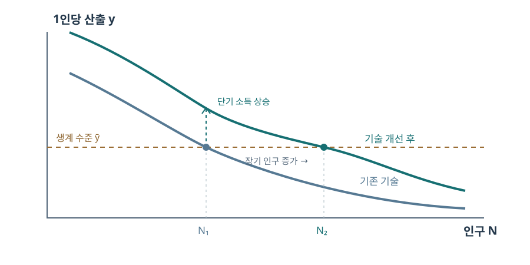

인구: 생존, 이동, 성장
인구는 산출을 나누는 분모이면서 노동, 수요, 전염과 이주의 주체다. 출생·사망·이동의 회계식에서 시작해 장기 성장과 세계적 인구 이동을 분석한다.
인구를 경제사의 출발점으로
인구는 생산을 나누는 분모이면서 생산을 담당하는 노동력이다. 따라서 인구 증가가 곧 풍요도 빈곤도 아니다. 토지·기술·자본이 그대로일 때와 함께 변할 때 결과가 달라진다. 이 강의는 출생·사망·이동을 각각 분해하고, 1인당 생활 수준과 생산 구조에 어떤 효과를 주는지 추적한다.
인구의 변화는 경제적 원인이면서 결과다. 소득과 보건이 좋아지면 더 많은 아이가 살아남을 수 있고, 살아남은 세대가 노동시장에 들어오면 생산과 저축이 변한다. 반대로 인구 증가가 고정된 농지에 압력을 줄 수도 있다. 따라서 한 시기의 인구 수만 외우기보다 ‘누가 태어나고, 누가 살아남고, 어디로 움직였으며, 그 사이 자원이 어떻게 변했는가’를 순서대로 묻는 것이 강의 전체의 지도다.
인구경제학의 범위
출산은 가구의 선택이고, 사망은 영양·질병·공공재의 결과이며, 이주는 임금 차이와 이동 비용에 반응한다. 경제학이 인구를 다룬다는 것은 사람을 숫자로만 환원한다는 뜻이 아니다. 생존과 가족 결정이 당시의 소득·제도·권력 구조 속에서 어떻게 가능했는지 묻는 것이다. 현재의 저출산을 과거의 다산과 단순 비교할 때 생존율과 교육비 차이를 놓치기 쉽다.
슬라이드의 ‘경제학 제국주의’는 경제적 선택의 틀을 전통적으로 사회학·인구학이 다루던 주제까지 넓힌다는 표현이다. 출산이 ‘선택’이라는 말도 모든 사람이 자유롭게 결정했다는 뜻은 아니다. 혼인 규칙, 피임 지식, 여성의 권리, 영아 사망 위험이 선택 집합을 제한한다. 오늘의 저출산 논의에서는 주거비·돌봄·노동시장을, 과거의 다산 논의에서는 아동 생존과 농가 노동 수요를 함께 보아야 같은 ‘출산율’의 경제적 의미가 드러난다.
맹자의 인구 문제
흉년 지역에서 다른 지역으로 사람을 옮겨도 한 나라 전체의 식량과 조세 제도가 그대로라면 구조적 문제는 남는다. 이 일화는 인구의 공간적 재배치와 전체 생활 수준을 구별하게 한다. 현대에도 지방에서 수도권으로 이동하면 개인의 기회는 개선될 수 있지만 주거·교통과 지역 간 재정 문제는 새로 생긴다.
《맹자》의 양혜왕은 흉년이 든 하내의 사람을 하동으로 옮기고 곡식을 반대로 보냈는데도 왜 이웃 나라보다 백성이 늘지 않는지 묻는다. 이야기는 단순히 이주 정책의 실패를 말하기보다, 사람들이 어디에서 살 수 있다고 기대하는가에 인구 유입이 달린다는 질문으로 읽을 수 있다. 이동은 같은 국가 안에서 합계 인구를 바꾸지 않지만, 지역별 기근 위험과 노동 공급은 바꾼다. 나라 전체의 인구를 늘리려면 출생·사망·국경 간 이동까지 따로 설명해야 한다.
분모로서의 인구
1인당 GDP는 \(y=Y/N\)이다. 총산출 \(Y\)가 커져도 인구 \(N\)이 더 빨리 늘면 평균 산출은 줄어든다. 미분하면 \(\dot y/y=\dot Y/Y-\dot N/N\)가 된다. 총량은 국가의 세수·군사력과 관련되고 1인당 수치는 평균 생활 수준과 더 가깝다. 다만 소득분배와 비시장 가사노동까지 알려 주지는 않는다.
성장률을 차근차근 계산하기
\(y=Y/N\)의 양변에 로그를 취하면 \(\ln y=\ln Y-\ln N\)이다. 시간을 따라 미분할 때 \(d\ln x/dt=\dot x/x\)이므로 \(g_y=g_Y-g_N\)을 얻는다. 연도별 자료의 정확한 이산식은 \(1+g_y=(1+g_Y)/(1+g_N)\)이다. 예를 들어 총산출이 3%, 인구가 2% 늘면 1인당 성장률은 \(1.03/1.02-1\approx0.98\%\)다. 1%라는 뺄셈은 작은 성장률에서 유용한 근사다.
per capita의 여러 의미
1인당 산출, 소득, 소비는 분자가 다르다. 생산이 국내에서 이루어져도 이윤이 해외로 지급되면 국내총생산과 국민소득이 달라질 수 있다. 가계 소비가 늘지 않고 투자와 군사비가 늘면 1인당 GDP가 상승해도 체감 생활 수준은 다를 수 있다. 평균이므로 부유층의 소득 집중도 함께 확인해야 한다.
1인당 GDP는 국내에서 생산된 부가가치 \(Y\)를 전체 인구 \(N\)으로 나눈다. 취업자 한 사람당 생산성 \(Y/L\)과도 다르다. 노인과 아동의 비중이 높으면 생산성이 같아도 \(Y/N=(Y/L)(L/N)\)이 낮아질 수 있다. 이 항등식은 노동자당 생산성과 취업 비율을 분리한다. 소비 수준을 보려면 생산 중 얼마가 가계 소비로 돌아왔는지, 분배가 어떻게 되었는지를 추가로 확인해야 한다. ‘per capita’라는 공통 분모가 분자의 차이를 없애지는 않는다.
맬서스와 고전파의 갈림길
맬서스는 식량 생산의 제약과 인구 반응을 통해 빈곤의 지속을 설명했다. 리카도도 수확체감을 다뤘지만 토지 지대와 분배에 더 관심을 두었다. 케인스와 맬서스를 곧바로 한 계보로 묶는 것은 총수요 부족에 대한 문제의식이라는 제한된 의미에서 이해해야 한다. 맬서스의 인구론과 케인스의 유효수요 이론은 같은 모형이 아니다.
1798년 《인구론》의 맬서스는 사람 수가 식량의 증가를 앞지르면 1인당 식량이 압박받는다는 장기 문제를 강조했다. 리카도는 농지의 질이 다른 상황에서 경작이 확대되면 한계 토지와 지대가 어떻게 정해지고 임금·이윤이 어떻게 나뉘는지에 더 집중했다. 케인스와의 연결은 경기 침체에서 생산능력이 있어도 수요가 부족할 수 있다는 관심의 일부다. 동일한 인물이 여러 문제를 연구했다는 사실과 모든 주장이 같은 이론이라는 주장을 구분해야 계보 그림을 정확히 읽을 수 있다.
학파 계보를 사용할 때
학파의 계보는 주요 질문을 정리하는 지도이지 단일한 진화의 사다리가 아니다. 중상주의의 국가·무역, 중농주의의 토지, 고전파의 분배, 신고전파의 한계 선택이 서로 다른 시대의 문제를 반영한다. 어떤 연구자의 주장이 이후 학파의 모든 주장과 일치한다고 생각하지 말고, 공유한 질문과 달리 제시한 답을 따로 읽자.
그림의 가지는 학파 사이의 지적 관계를 단순화한 것이다. 중농주의는 농업의 순생산과 경제 순환을, 중상주의는 국가의 무역·재정을, 고전파는 생산과 분배의 장기 법칙을 중심에 두었다. 신고전파가 등장한 뒤에도 토지와 인구의 제약이 사라진 것은 아니다. 어떤 문제가 그 시기의 정치·기술·자료 때문에 중요해졌는지를 함께 보면 학파를 단순한 옛 이론 목록이 아니라 서로 다른 질문에 대한 시도로 이해할 수 있다.
맬서스 함정의 직관
맬서스가 제시한 기하급수적 인구와 산술급수적 식량의 대비는 기제의 그림이지 모든 시대의 실측 성장 법칙은 아니다. 핵심은 고정 토지에서 노동이 증가하면 1인당 식량과 임금이 감소하고, 생존·출산 반응이 다시 인구를 바꾼다는 점이다. 기술이 지속적으로 발전하거나 출산 행동이 바뀌면 장기 결과가 달라진다.
기하급수는 매 기간 같은 비율로 증가하여 \(N_t=N_0(1+g)^t\)가 되고, 산술급수는 매 기간 같은 양이 더해져 \(F_t=F_0+at\)가 된다. 두 식을 극단적으로 연장하면 언젠가 사람 수가 식량을 앞지른다는 직관이 생긴다. 실제 분석에서는 농업 기술, 교역, 농지 확장, 출산 통제가 변하므로 이 두 식을 고정된 예언처럼 쓰지 않는다. 맬서스 함정의 핵심은 특정 증가율 숫자가 아니라 소득 상승에 대한 인구 반응이 장기 1인당 소득을 다시 낮출 수 있는가다.
생산함수로 보는 함정
토지 \(T\)가 고정되고 \(Y=A T^{\alpha}N^{1-\alpha}\)라고 하자. 1인당 산출은 \(y=A(T/N)^\alpha\)다. 기술 \(A\)가 한 번 상승하면 \(y\)가 먼저 오른다. 출생이 사망을 웃돌아 \(N\)이 증가하면 \((T/N)^\alpha\)가 작아져 소득이 되돌아간다. 균형 생계수준 \(\bar y\)가 고정이라면 \(N^*=T(A/\bar y)^{1/\alpha}\)이므로 기술 개선은 주로 부양 가능한 사람 수에 남는다.
단기 충격에서 장기 균형까지
생산함수를 사람 수로 나누면 \(Y/N=A T^\alpha N^{-\alpha}\)가 된다. 따라서 토지와 기술이 고정일 때 인구가 1% 늘면 1인당 산출은 대략 \(\alpha\)% 감소한다. 안정 소득을 \(\bar y\)라고 가정하고 \(\bar y=A(T/N^*)^\alpha\)를 풀면 먼저 \((\bar y/A)^{1/\alpha}=T/N^*\), 이어서 \(N^*=T(A/\bar y)^{1/\alpha}\)가 된다. \(A\)가 영구적으로 상승해도 출산·생존 반응이 충분히 강하면 새 교점은 오른쪽으로 이동하고 장기 소득은 다시 \(\bar y\)가 된다. 이 결론에는 고정 토지, 일정한 인구 반응, 지속 성장하지 않는 기술이라는 조건이 필요하다.

인구 회계식
기간 중 인구 변화는 \(\Delta N=B-D+M_{\mathrm{in}}-M_{\mathrm{out}}\)이다. \(B,D\)는 출생과 사망, \(M_{\mathrm{in}},M_{\mathrm{out}}\)은 유입과 유출 인원이다. 뒤의 인구배당식에서 \(E\)를 취업자 수로 쓰므로 이동 인원에는 별도 기호 \(M\)을 쓴다. 출생과 사망이 모두 높은 사회는 둘 다 낮은 사회보다 가족의 생존 경험과 연령 구조가 크게 다르다. 강의 전반에서 자연증가와 순이동을 혼동하지 않도록 먼저 분해하자.
한 도시가 한 해에 1,000명 늘었더라도 출생 1,500명·사망 500명으로 늘었는지, 순유입 1,000명으로 늘었는지에 따라 학교와 주택 수요가 다르다. 국가 전체를 합할 때 국내 지역 사이의 이동은 한 지역의 유출과 다른 지역의 유입이 상쇄되지만, 개별 도시에서는 그렇지 않다. 국경을 넘는 이주는 국가 전체의 인구 변화에도 남는다. 따라서 분석 단위가 국가인지 도시인지 먼저 정해야 한다. 등록되지 않은 출생이나 이동이 많으면 이 회계식이 맞지 않는 것처럼 보일 수 있는데, 이는 정의보다 자료의 누락 문제일 가능성이 있다.
조출생률과 조사망률
조출생률 \(b=1000B/\bar N\), 조사망률 \(d=1000D/\bar N\)에서 \(\bar N\)은 보통 연평균 인구다. 단위는 퍼밀(‰), 즉 인구 천 명당 건수다. 조율은 계산이 쉬우나 연령 구성에 영향을 받는다. 고령자가 많은 나라의 조사망률이 높아도 같은 연령에서의 사망 위험은 오히려 낮을 수 있다. 비교에는 연령별 사망률과 표준화율이 필요하다.
‘조(crude)’는 계산이 부정확하다는 뜻이 아니라 연령·성별 구성을 아직 조정하지 않았다는 뜻이다. 조사망률은 모든 연령의 사망을 전체 인구로 나누므로, 고령자의 비중이 높은 사회에서는 의료가 좋아도 높을 수 있다. 연령별 사망률은 특정 나이의 사망을 그 나이의 인구로 나누고, 연령 표준화율은 동일한 가상의 연령 구조를 두 사회에 적용한다. 출생률도 가임 연령 여성의 비중에 영향을 받으므로 조출생률과 여성 1인당 출산 지표를 구분해야 한다.
출생·사망률의 범위
높은 출산력 집단의 관찰값은 생물학적 가능성과 사회 전체의 지속 가능한 출생률을 구분하게 한다. 혼인 연령, 모유 수유, 산모 건강, 피임, 유아 생존이 모두 실제 출생률을 바꾼다. “최대치”를 모든 사람에게 적용 가능한 일정한 상수로 보지 말고, 특정 집단과 기간에서 관찰된 상한의 근거를 확인해야 한다.
슬라이드의 50‰는 후터라이트 집단의 높은 출산 사례를 이용한 조출생률의 역사적 상한에 관한 교육용 기준이다. 여성 한 명의 생애 출생아 수와 전체 인구 천 명당 한 해 출생아 수는 분모와 기간이 다르므로 서로 바꿔 읽을 수 없다. 조사망률 30‰도 모든 전근대 사회의 불변 값이 아니라 비교를 위한 대표적 수준이다. 전염병 해에는 그보다 훨씬 높을 수 있고, 평상시의 사망 위험은 연령 구조에 따라 달라진다.
자연증가율의 단위
조출생률 50‰, 조사망률 30‰이면 자연증가율은 \((50-30)/1000=0.02\), 즉 연 2%다. 인구 이동이 없다면 \(N_{t+1}\approx1.02N_t\)이고, 복리로 \(t\)년 뒤 \(N_t\approx N_0(1.02)^t\)다. 천 명당 20명을 곧 20%라고 읽는 단위 오류가 흔하다. 순이동률이 있으면 이를 별도로 더해야 한다.
천 명당 출생 50명에서 사망 30명을 빼면 순증가 20명이다. 이를 다시 천 명으로 나누어 \(20/1000=0.02\)를 얻는다. 2%가 매년 유지되면 1년 뒤 \(1.02N_0\), 2년 뒤 \(1.02^2N_0\)가 된다. 두 배가 되는 기간은 \((1.02)^t=2\)의 양변에 로그를 취해 \(t=\ln 2/\ln 1.02\approx35\)년이다. 실제 역사에서 율은 해마다 바뀌므로 이 수치는 일정한 율이라는 가정 아래의 비교 기준이다.
적극적 억제와 예방적 억제
적극적 억제는 높은 사망률이 인구를 제한하는 경로, 예방적 억제는 만혼·독신·출산 조절 등으로 출생이 줄어드는 경로다. 둘 다 \(b(y)=d(y)\)라는 안정 조건을 만들 수 있어도 안정 소득은 다를 수 있다. 이 도식은 역사적 제도를 설명하는 출발점이며, 실제 사회에서 출산 선택을 소득만의 함수로 환원해서는 안 된다.
같은 토지와 기술에서 소득이 오르면 사망이 줄어드는 경제를 생각하자. 출생률이 높은 수준에 고정되면 두 율이 같아지는 지점은 낮은 소득에서 나타날 수 있다. 만혼 등으로 출생률이 내려가면 같은 사망률과 만나는 지점이 더 높은 소득으로 옮겨갈 수 있다. 그래프의 가로축은 소득, 세로축은 인구 천 명당 출생·사망 건수이므로 곡선의 교점은 인구 규모가 아니라 인구 증가가 0인 소득이다. 예방적 억제의 후생 해석에는 여성의 선택권과 아동 생존도 포함해야 한다.
사망률이 균형을 정할 때
소득이 증가할수록 사망률 \(d(y)\)가 내려가고 출생률 \(b\)가 높은 수준에서 일정하면 두 곡선의 교점 \(y^*\)가 장기 소득이다. \(y>y^*\)에서는 \(b>d\)로 인구가 늘어 토지/사람 비율이 낮아지고, \(y<y^*\)에서는 반대다. 안정성은 이 방향의 피드백에서 나온다. 그래프의 교점은 높은 사망을 “바람직하다”고 평가하는 점이 아니다.
슬라이드의 \(W_{positive}\)는 적극적 억제만 작동할 때 출생률과 사망률이 만나는 소득을 표시한다. 사망률 곡선이 소득과 함께 내려가는 것은 더 나은 영양·주거가 생존 확률을 높인다는 단순화다. 이 그림에는 기술 개선이 지속되는 경우나 국제 식량 교역이 빠져 있다. 따라서 교점이 존재한다는 모형의 결과와 특정 사회가 실제로 그 교점에서 오랫동안 살았다는 역사적 증거를 구별해야 한다.
일시적 소득 증가의 반응
새 기술이나 좋은 작황으로 현재 소득이 \(y^*\)보다 높아지면 출생이 사망보다 많아질 수 있다. 이때 인구는 즉시 점프하지 않고 여러 세대에 걸쳐 증가한다. 단기적인 풍요와 장기 균형을 같은 시점으로 읽으면 동학을 잃는다. 초기 충격이 지속적 생산성 성장으로 이어지면 인구 증가가 이를 완전히 상쇄하지 못할 수도 있다.
그림에서 소득이 일시적으로 \(W^*\)로 올라간 지점의 조출생률이 50‰, 조사망률이 30‰라면 자연증가는 20‰, 즉 연 2%다. 이 율이 유지되면 35년 정도에 인구가 두 배가 될 수 있지만, 인구가 늘면서 소득이 내려가면 사망률과 출생률도 다시 바뀌므로 단순한 복리 계산을 끝까지 적용해서는 안 된다. 충격 직후의 높은 소득과 수십 년 뒤의 소득을 나눠 보는 것이 맬서스 모형의 동학이다.
출생 행동이 바뀌면
그림의 예방적 억제는 소득이 낮아질 때 결혼을 늦추거나 출산을 줄여 조출생률이 기존의 50‰ 아래로 내려가는 반응이다. 가로축을 오른쪽으로 따라가면 출생률 곡선은 처음에는 올라가다가 50‰에서 수평이 된다. 따라서 “고소득일수록 출생률이 하락한다”는 곡선이 아니다. 낮은 소득에서 인구 증가가 완화되면 토지 한 단위당 인구가 덜 늘어, 출생률과 사망률이 같아지는 소득이 오른쪽으로 옮겨갈 수 있다. 이 도식은 역사적 만혼과 가족 형성의 한 기제를 보여 주며, 실제 출산은 생존율·여성 교육·노동시장·양육비에도 반응한다.
기존의 수평한 출생률과 하향하는 사망률이 만나는 소득을 \(W_{positive}\)라 하자. 같은 소득에서 예방적 억제가 작동하면 출생률은 50‰보다 낮아지고 사망률은 그대로이므로 사망이 출생보다 많아진다. 인구가 줄면 토지/인구 비율이 높아져 1인당 산출이 오르고 사망률은 내려간다. 동시에 이 그림에서는 소득 회복에 따라 출생률도 올라간다. 두 율이 다시 만나는 오른쪽 교점이 \(W_{preventive}\)다. 이 비교는 모든 시대에 고소득 가구가 저소득 가구보다 자녀가 적었다는 주장과 다르다. 그래프의 조출생률은 가구별 출산 선호와 연령 구조를 한데 묶은 사회적 지표이므로 실제 적용에는 혼인·생존·연령별 출산 자료가 필요하다.
예방적 억제가 사망을 늘리지 않고 균형 소득을 높이는 과정을 식으로 볼 수 있을까?
토지 \(T\)와 기술 \(A\)가 고정된 \(y=A(T/N)^\alpha\)에서는 \(N\)이 1% 줄면 \(y\)가 대략 \(\alpha\)% 오른다. 조출생률 \(b(y)\)와 조사망률 \(d(y)\)를 천 명당 수치로 쓰면 \(\Delta N/N\approx[b(y)-d(y)]/1000\)이다. 따라서 \(\Delta\ln y\approx-\alpha[b(y)-d(y)]/1000\)으로 연결된다. 예를 들어 옛 교점의 \(b=d=50\)‰에서 예방적 억제로 \(b\)가 40‰가 되고 \(d\)가 아직 50‰라면 초기 인구 변화는 약 \(-1\%\)다. 소득이 오르면서 출생률은 올라가고 사망률은 내려가 새 교점에 도달한다. 이 계산은 수준이 이동하는 방향을 보이는 사고실험이다. 연령 구조가 변하는 실제 사회에서는 출생·사망의 반응이 즉시 일어나지 않고 기술도 고정되어 있지 않다.
근대적 경제성장의 탈출
기술·인적자본·조직의 생산성이 인구 증가보다 충분히 빨리 상승하면 \(y=Y/N\)이 지속적으로 높아진다. 한 차례의 생산성 상승과 매년 반복되는 상승을 구분해야 한다. 전자는 맬서스적 반응에 의해 흡수될 수 있고, 후자는 인구 조정 중에도 1인당 소득을 밀어 올릴 수 있다. 인구변천으로 출생률까지 하락하면 1인당 자본과 교육 투자에도 여유가 생긴다.
근대적 성장은 ‘인구가 줄어서 부유해졌다’와 다르다. 산업화한 나라들에서는 인구와 총산출이 모두 증가하되 총산출이 더 빠르게 증가했다. 이를 \(g_y\approx g_Y-g_N\)으로 표현하면, 인구 증가율 \(g_N\)이 양수여도 \(g_Y>g_N\)이면 평균 소득이 오른다. 슬라이드에 적힌 전쟁·질병의 지속은 심각한 문제지만, 그 존재만으로 어떤 오늘의 사회가 맬서스 균형에 묶여 있다고 말할 수 없다. 장기 생산성 추세와 출생·사망 반응을 따로 추정해야 한다.
세계경제사 그래프의 축
장기간 거의 평평한 1인당 소득선과 근대의 상승은 “언제 탈출했는가”라는 질문을 만든다. 그러나 로그축, 구매력 평가, 고대의 희박한 관찰치를 어떻게 보간했는지에 따라 기울기의 인상이 달라진다. 영국의 선행과 다른 지역의 후발을 한 방향의 자동 추격으로 가정하지 말고 기술 이전과 제도적 장벽을 따져야 한다.
이 슬라이드의 그림은 영국·프랑스·독일·미국·일본이 서로 다른 시점과 속도로 위쪽으로 뻗는 여러 곡선을 그린다. 세로축의 ‘1’은 전근대의 기준 수준을 도식적으로 나타내며 특정 나라의 정확한 국민계정 관측치가 아니다. 따라서 곡선의 모양을 실제 성장률의 정밀한 추정으로 읽기보다, 산업혁명의 출발 시점과 거대한 분기라는 두 질문을 보는 지도라고 생각하자. 어떤 나라가 먼저 성장했는지와 그 나라의 모든 집단이 동시에 풍요로워졌는지는 다른 명제다.
경기순환과 추세
한 해의 흉작이나 전염병은 소득을 추세 아래로 떨어뜨리지만, 장기 성장률의 지속적 변화와 같지 않다. 추세를 추정할 때에는 시작과 끝의 특이한 해, 전쟁과 물가 환산을 조심해야 한다. 반대로 긴 평균을 쓰면 사람들의 실제 위기 경험이 지워질 수 있다. 장기 경향과 단기 충격을 서로 다른 시간 척도로 읽자.
그림에서 매년 오르내리는 선은 경기변동, 완만하게 움직이는 선은 장기추세다. 한 해 소득이 높아진 이유가 흉작 회복이라면 이전 수준으로 돌아간 것일 수 있고, 새로운 생산 기술이 계속 확산되면 추세의 기울기 자체가 바뀐다. 예를 들어 한 해 10% 감소 뒤 다음 해 10% 증가하면 원래 수준은 \(0.9\times1.1=0.99\)로 아직 1% 낮다. 단기 변동과 장기 성장의 구별은 한 해의 ‘반등’을 지속적인 번영으로 오해하지 않게 한다.
거대한 분기의 뜻
Great Divergence는 유럽 일부와 아시아 주요 지역의 생활 수준이 언제, 왜 크게 벌어졌는지를 둘러싼 논쟁이다. 처음부터 서유럽 전체가 아시아 전체보다 부유했다고 단정할 수 없다. 도시 임금, 식품 소비, 노동시간과 1인당 GDP 복원은 서로 다른 지표다. 원인도 석탄·신대륙 자원·제도·기술의 상호작용으로 다뤄야 한다.
슬라이드가 제시한 ‘국가 간 소득 격차 약 50:1’은 비교 시점과 나라 선택에 좌우되는 교육용 규모 표현이다. 한 나라 안의 불평등과 나라 사이 평균 소득 격차도 구분해야 한다. 나라 간 격차가 커졌다는 사실에서 나라 안의 격차가 줄었다는 결론이 자동으로 나오지 않는다. 대분기의 시작 시기를 검증하려면 같은 가격 기준으로 환산한 소득, 실질임금, 소비 자료를 여러 지역에서 비교하고 불확실한 전근대 추정치의 범위를 함께 제시해야 한다.
중국 전체와 영국을 비교할까, 강남과 영국을 비교할까?
대분기 논의에서 수업은 중국의 강남처럼 생산성이 높은 지역을 따로 볼 필요를 강조한다. 중국 전체 평균에는 기후·토지·교역 조건이 크게 다른 지역이 섞인다. 그렇다고 중국의 가장 부유한 지역과 영국의 전국 평균만 비교하면 표본 선택이 결과를 바꿀 수 있다. 국가 대 국가의 총량·평균 비교와 핵심 상업 지역 대 핵심 상업 지역의 비교를 각각 제시해야 한다. 실질임금을 쓰더라도 쌀과 빵의 가격, 가족 노동시간, 주거비와 소비 묶음을 맞춰야 생활수준의 의미가 비슷해진다. 어느 쪽이 먼저 풍요로웠는가와 이후 어느 쪽의 성장률이 오래 높았는가는 서로 다른 질문이다. 1800년 무렵 두 지역의 수준이 비슷하다는 주장이 참이어도 산업화가 이후의 기울기를 달리했다면 장기 격차는 커질 수 있다.
한국의 장기 1인당 소득
한국의 시계열에서 수준의 상승과 성장률의 상승은 다르다. 그래프가 일정한 가격 연도를 쓰는지, 식민지기의 국민계정과 전후 자료의 연결 방법이 무엇인지 확인하자. 한국의 take-off를 한 연도로 정하더라도 이전의 교육·토지·산업 기반을 무시하면 인과를 과도하게 단순화한다. 실질 GDP의 증가와 그 분배도 구분해야 한다.
그림의 세로축은 2010년 가격의 만원 단위 1인당 GDP, 가로축은 1911–2015년이다. 슬라이드가 ‘level’과 ‘change’를 구별하는 이유는 그래프의 높이가 현재 소득 수준이고, 기울기가 일정 기간의 증가 속도이기 때문이다. 상승하는 곡선도 성장률이 둔화하면 기울기가 완만해진다. 역사 자료의 앞부분은 추정과 재구성의 비중이 크므로, 특정 연도에 곡선이 꺾였다는 시각적 인상만으로 정책 하나의 인과효과를 확정해서는 안 된다.
사망 충격의 여러 유형
전염병, 기근, 전쟁, 기후 충격은 사망자 수뿐 아니라 나이별 사망, 이동, 생산, 가족 형성을 함께 바꾼다. 맬서스 모형의 “적극적 억제”는 인구가 줄면 토지/사람 비율이 오를 수 있음을 말하지만, 실제 재난은 자본과 제도도 파괴한다. 따라서 재난 뒤 임금 상승을 기계적인 축복으로 해석해서는 안 된다.
슬라이드는 흑사병, 아메리카의 천연두, 유럽의 소빙기, 조선의 호열자, 아일랜드의 감자 기근을 나란히 둔다. 각각은 병원체, 기후, 식량 공급이라는 서로 다른 충격이며 사망과 이주의 경로도 다르다. 외생충격이라는 말도 분석 대상인 지역의 단기 경제변수 바깥에서 왔다는 뜻이지, 그 사회의 제도가 피해 규모에 영향을 주지 않았다는 뜻은 아니다. 흑사병 뒤 임금의 변화와 감자 기근 뒤의 이민은 같은 식으로 계산할 수 없다.
현대 전염병과 역사 비교
1918년 인플루엔자와 최근의 유행병은 병원체, 감염 연령, 의료기술, 이동망이 다르다. 단순 사망률 비교보다 초과사망, 노동 공급, 학교 폐쇄와 소득 손실을 구분해야 한다. 세계적 연결은 전파 속도를 높일 수 있지만 과학 정보와 대응 기술도 함께 확산시킨다. 한 사건의 결과를 다른 시대로 그대로 옮기지 말자.
슬라이드의 질병 목록은 이름이 비슷하다고 같은 충격으로 묶을 수 없음을 보여 준다. 1918년 인플루엔자, 신종 플루, 조류 인플루엔자, SARS, MERS, 지카, COVID-19, 엠폭스는 전파 방식과 치명률, 영향을 크게 받는 연령층이 다르다. 경제적 효과도 직접 사망뿐 아니라 돌봄, 학교와 직장의 중단, 이동 제한, 의료 자원의 전용을 포함한다. 비교할 때에는 병원체의 이름보다 같은 연령·지역 기준의 초과사망과 생산 손실을 나란히 보는 편이 낫다.
흑사병의 경제사적 위치
흑사병은 인구 급감이 노동과 토지의 상대적 희소성을 어떻게 바꾸는지 관찰할 중요한 사례다. 그러나 중세 말의 변화가 병 하나로 시작되고 끝난 것은 아니다. 이전의 인구 압력, 장원의 의무, 도시 시장과 권력 관계가 충격의 결과를 조정했다. 다음 자료에서는 확산 경로와 사회적 반응을 따로 본다.
흑사병은 14세기 중엽 유럽에서 일어난 대규모 사망 충격을 가리킨다. 사람 수가 줄면 토지 한 단위당 노동이 귀해져 임금이 오를 가능성이 있지만, 지주가 이동을 제한하거나 임금을 통제하면 실제 변화는 달라진다. 농지 이용이 목축으로 바뀌는 등 생산 구조의 조정도 임금 효과에 영향을 준다. 따라서 흑사병을 ‘임금 상승의 원인’이라고 한 줄로 끝내지 말고 노동의 희소성 변화 → 계약·권력의 반응 → 실제 임금과 생활 수준의 순서로 살펴야 한다.
페스트의 시기와 이름
14세기 유행은 여러 차례의 파동이었고 사망도 지역마다 달랐다. “Black Death”라는 이름과 피부의 검은 반점만으로 전파 방식이나 치명률을 추정할 수 없다. 역사 기록, 고고학적 유골, 병원체 연구는 서로 다른 종류의 증거다. 사회경제적 효과를 따질 때에는 충격 전후의 인구와 임금 자료의 측정 불확실성을 함께 적어야 한다.
슬라이드는 1346–1369년 사이 여러 차례 유럽을 휩쓴 유행을 ‘pest’, ‘plague’, ‘Black Death’라는 이름으로 묶는다. 한 차례의 짧은 사건이 아니라 재유행이 있었다는 점이 노동시장에 중요하다. 한 번 사망이 발생한 뒤에도 가족 형성과 노동 공급이 회복되기 전에 다시 질병이 오면 새로운 균형을 찾기 어렵다. ‘흑’이라는 이름은 증상 묘사를 반영하지만, 명칭의 유래만으로 당시 모든 사망이 같은 병원체였다고 판단할 수는 없다.
기원에 관한 사료의 한계
발병의 “최초”를 묻는 것은 현재 남은 기록 중 어디가 가장 이른지와 병원체가 실제로 어디서 생겼는지를 구분해야 한다. 유럽 기록에 먼저 보인 지점을 세계적 기원으로 착각하면 유럽 중심적 서술이 된다. 이동 경로의 복원에는 교역로, 선박, 동물 숙주, 유전적 증거가 필요하며 단일한 직선 화살표만으로는 부족하다.
슬라이드는 중국 또는 인도를 언급하면서 정설이 없다는 점을 밝힌다. ‘동양에서 왔다’는 넓은 표현은 유럽에서 관찰한 확산 방향과 병원체의 최초 발생지를 혼동할 수 있다. 유럽 기록이 풍부한 곳은 기록의 생존 가능성이 높았던 곳일 수 있다. 어느 지역이 처음 감염되었는지 확인하려면 자료의 작성 시기, 당대 지명, 병원체를 확인할 유전학적 증거를 서로 대조해야 한다. 특정 지역을 원인으로 단정하는 서술은 질병과 사람에 대한 편견으로 이어지기 쉽다.
카파에서 유럽으로
흑해 교역항 카파는 제노바 상인과 유라시아의 이동망이 만나는 곳이었다. 상인·선박·화물이 이동한 네트워크는 상품뿐 아니라 질병도 옮길 수 있었다. 카파에서 유럽으로 전파되었다는 서술은 유력한 역사적 경로 중 하나지만, 각 지역의 도착 시점과 전파 기제를 독립 자료로 확인해야 한다. 교역의 이익과 감염 외부효과가 공존한다.
슬라이드는 1346년 카파, 1348년 영국까지 이어지는 연대를 제시한다. 항구에서 다른 항구로의 확산이 빨랐다면 교역선의 도착 기록과 지역의 첫 사망 기록을 비교할 수 있다. 그러나 오래된 연구가 제시한 영국 인구 절반 사망 같은 숫자는 당시 전국의 완전한 인구조사가 없어 불확실하다. 인구 급감의 방향과 특정 비율의 정확성은 다른 수준의 주장이다. 다음 지도는 확산의 시간 순서를 읽는 데 도움을 주지만 사망률 자체를 알려 주지는 않는다.
전파 지도 읽기
지도상의 화살표는 확인된 모든 감염자 이동을 뜻하지 않는다. 항구와 내륙 도시의 연도 표기를 읽어 이동 속도와 연결망을 추정하고, 보고가 늦어진 지역도 생각해야 한다. 지리적으로 가까운 곳보다 교역으로 강하게 연결된 곳이 먼저 노출될 수 있다. 전파 지도는 경제적 네트워크의 간접적인 지도이기도 하다.
슬라이드는 1347년 유럽 대륙에 알려진 뒤 약 다섯 해 만에 넓은 지역으로 퍼졌다는 서술과 15세기까지의 재유행을 구별한다. 최초 유입의 속도와 후속 파동의 지속은 다른 현상이다. 어느 도시의 첫 기록이 늦게 나타난 이유는 실제 감염의 지연, 기록의 손실, 당시의 진단 차이일 수 있다. 지도에서 빨간 점 하나를 확정적인 발병 날짜로 읽지 말고, 항만과 내륙의 연결을 검증할 추가 사료의 위치로 생각하자.
유럽의 흑사병 전파 지도
지도는 흑해의 카파에서 콘스탄티노플을 거쳐 지중해 항구와 서유럽·북유럽 내륙으로 이어지는 1346–1352년의 전파 경로를 화살표와 연도로 표시한다. 1347–1348년 이탈리아·프랑스·이베리아의 여러 항구, 1349년 영국과 북유럽 도시가 연결되는 순서를 보자. 화살표는 개별 환자 한 명의 이동 기록이 아니라 후대에 재구성한 가능한 확산 경로다.
항구가 내륙보다 먼저 표시되는 것은 해상 교역과 사람의 이동이 전염을 매개했을 가능성을 보여 준다. 그러나 지도만으로 벼룩·사람 사이의 각 전파 비중이나 도시별 정확한 사망률을 알 수 없다. 경로의 시간 순서와 감염을 실제로 옮긴 생물학적 기제를 구별해야 한다. 이동망은 상품 시장을 넓히는 동시에 질병 위험을 전달할 수 있다는 경제사의 두 얼굴을 드러낸다.
생물학전 이야기의 검증
포위군이 시신을 던졌다는 전승은 전쟁과 질병을 연결하는 강렬한 이야기다. 그러나 전승의 신뢰성과 실제 전파에서의 비중은 별도로 검증해야 한다. 한 사건이 알려진 전파 경로 전체를 설명하지 못할 수 있다. 특히 교역망·설치류·벼룩·사람 사이의 전파 가능성을 구분하고 단일한 기원담으로 고정하지 말자.
카파의 포위와 시신 투척 이야기가 사실이었다고 해도, 그것만으로 유럽 전역의 대유행을 설명하려면 감염이 도시 안에서 유지되고 제노바인 선박을 통해 다른 항구로 옮겨졌다는 중간 연결이 필요하다. 그 과정의 연대와 병원체 전파 가능성을 사료로 검토해야 한다. 매력적인 단일 사건의 이야기는 훨씬 큰 교역망과 여러 번의 유입을 보이지 않게 만들 수 있다. 전쟁 사건과 대륙 규모의 인구 변화 사이의 인과 사슬을 한 단계씩 점검하자.
증상 묘사의 용도
그림의 반점은 당대의 질병 인식을 보여 주지만 현대 의학적 진단서가 아니다. 같은 시기의 다른 질병도 비슷하게 묘사될 수 있다. 역사 인구 연구에서는 증상 그림보다 매장 기록, 유언장, 장부의 공백과 가구 단위의 사망 흔적이 사망 규모를 추정하는 데 더 직접적일 수 있다.
수도사들의 몸에 그려진 검붉은 반점은 감염자의 외형을 전달하는 시각적 언어다. 그림의 제작자와 제작 시점이 사건과 얼마나 가까운지에 따라 증거 가치가 달라진다. 질병의 종류는 병원체 자료와 여러 증상 기록을 함께 봐야 하고, 질병의 규모는 사망·매장·세금 기록이 더 직접적이다. 한 자료가 두 질문에 모두 답할 수 있다고 생각하면 증상 묘사에서 곧바로 사망률을 추정하는 오류가 생긴다.
공동묘지와 사망 규모
대량 매장은 충격의 심각성을 시각화한다. 하지만 한 도시의 묘지 그림으로 유럽 전체의 사망률을 계산할 수는 없다. 사망자가 집중된 계절과 지역, 매장 관행, 기록이 남지 않은 빈민을 고려해야 한다. 노동시장 효과도 같은 비율로 나타나지 않는다. 생존 노동자의 기술과 토지 이용 방식이 달라지기 때문이다.
이 그림은 1349년 투르네에서 관을 공동묘지에 묻는 장면이다. 같은 시기의 정상적인 매장 능력을 넘는 사망이 있었다는 상황을 전하지만, 관의 수가 곧 그 도시의 총 사망자 수는 아니다. 성직자·부유층의 기록이 더 남았다면 사망 통계는 편향될 수 있다. 경제적 충격을 추정하려면 사망 규모 외에 어떤 직업과 연령의 사람이 살아남았는지 알아야 한다. 노동자 수의 감소가 숙련 노동의 감소와 정확히 같지는 않다.
유대인 박해와 위기 대응
질병 원인을 모를 때 소수집단에 책임을 떠넘기는 폭력은 경제 충격의 사회적 경로다. 거래·신용 네트워크의 붕괴와 재산 약탈도 뒤따를 수 있다. 이런 박해는 방역의 성과가 아니라 정보 부족과 권력, 편견의 결과로 분석해야 한다. 전염병의 경제사를 단순 노동 공급 곡선만으로 설명할 수 없는 이유다.
슬라이드의 1349년 투르네 그림은 유대인을 화형하는 장면을 보여 준다. 이는 질병이 실제로 유대인 때문에 발생했다는 증거가 아니라 희생양 만들기와 폭력의 역사적 증거다. 박해는 사람의 생명과 재산을 빼앗을 뿐 아니라 거래 상대와 공동체의 신뢰를 무너뜨린다. 전염병의 직접 효과인 노동 손실과, 공포·거짓 정보·정치적 이해관계가 만든 2차 피해를 나눠 설명해야 같은 인구 충격이 왜 지역마다 다른 제도적 결과를 남겼는지 이해할 수 있다.
채찍파의 행진
고행 운동은 사람들이 재난을 종교적·도덕적 언어로 해석한 한 방식이다. 믿음은 이동, 집회, 기부, 폭력과 같은 실제 행동을 바꾸므로 경제사에서 배제할 수 없다. 현대의 질병 지식을 과거 행위자에게 미리 부여하면 왜 특정 대응이 설득력을 가졌는지 이해하기 어렵다. 동시에 그림 한 장을 모든 신앙인의 전형으로 일반화하지 말자.
1349년 네덜란드의 채찍파 행진 그림에서 집단적인 고행은 재난을 죄와 참회의 문제로 해석한 행동이다. 경제학의 언어로 말하면 질병 원인에 대한 믿음이 비용이 드는 행동을 선택하게 하고, 집회와 이동을 통해 다른 사람에게 영향을 줄 수 있다. 그러나 우리는 그림만으로 참여자의 정확한 동기나 집단의 규모를 알 수 없다. 역사적 행위자가 어떤 정보를 가졌는지 복원하는 일과 그 행동의 사회적 결과를 평가하는 일을 분리해야 한다.
교역과 질병의 공동 확산
교역량이 늘면 상품의 다양성과 도시 소득이 늘 수 있지만, 병원체가 이동할 경로도 늘어난다. 감염 위험은 거래 당사자 밖의 사람에게 비용을 주는 외부효과다. 무역을 금지하면 이익도 잃으므로 역사적으로 검역, 정보 공유, 항구 통제와 같은 절충이 등장했다. 흑사병을 세계화의 한 부산물로 볼 수 있지만 전파의 세부는 증거로 따져야 한다.
슬라이드는 흑사병을 유럽만의 사건으로 좁히지 않고 아시아·아프리카까지 이어진 범유행성 질병으로 놓는다. 장거리 교역이 접촉을 늘렸다는 설명은 상품과 사람의 흐름을 보여 주지만, 어느 노선에서 얼마나 전염이 일어났는지는 따로 검증해야 한다. 무역을 막는 조치의 순편익은 줄어드는 감염 위험과 잃는 식량·의약품·소득을 함께 비교해야 한다. 당시 정보와 행정력이 제한된 상황에서 가능한 선택지가 무엇이었는지도 중요하다.
흑사병과 유라시아 교역로
지도는 세 종류의 경로를 겹쳐 놓는다. 넓은 갈색 화살표는 14세기 흑사병의 전파, 붉은 선은 이븐 바투타의 여행로, 초록 선은 마르코 폴로의 여행로다. 세 경로가 지중해·중앙아시아·인도양의 교역 결절점과 함께 보이는 것은 장거리 이동망이 이미 연결되어 있었음을 보여 준다. 여행자 개인이 흑사병을 운반했다는 뜻은 아니다.
같은 지도에 그렸다고 세 여행과 유행병이 같은 해에 진행된 것도 아니다. 특히 여행 기록은 상인·사절·학자의 이동 가능성을 보여 주는 자료이고, 갈색 화살표는 질병 확산을 요약한 재구성이다. 경제학적으로는 네트워크가 촘촘할수록 거래에서 생기는 정보·상품의 이익과 감염의 외부비용이 함께 커질 수 있다. 경로의 중첩은 접촉 가능성의 단서일 뿐 전파의 인과를 증명하지 않는다.
대륙별 인구의 장기 변화
600~1600년의 인구 추정치는 세기별로 자료의 질이 크게 다르다. 흑사병 전후 유럽의 감소를 읽을 때 세계 전체의 인구 감소와 동일시하지 말자. 지역별 농업 생산력, 전염병, 이주가 서로 다른 경로를 만들었다. 그래프의 절대 인구와 비율을 구분하고, 관측값인지 역사적 추정값인지 확인하는 것이 중요하다.
대륙별 그래프를 볼 때 먼저 세로축이 사람 수인지 세계 인구에서 차지하는 비율인지 확인한다. 유럽의 절대 인구가 감소해도 다른 대륙이 같은 방향으로 움직였다고 추정할 수 없고, 세계 비중이 떨어졌다고 절대 인구가 반드시 감소한 것도 아니다. 600년 무렵의 값은 현대 센서스 같은 직접 관측이 아니라 산발적인 사료에서 복원한 추정치다. 흑사병 전후의 꺾임은 질병 충격의 규모를 살펴볼 단서이지만 다른 전쟁·기근과 자료 경계 변화도 점검해야 한다.
천연두와 신대륙
신대륙의 천연두는 병원체에 대한 이전 노출과 면역 경험의 차이가 인구에 큰 충격을 줄 수 있음을 보여 준다. 그러나 원주민 인구 감소를 한 질병만의 결과로 쓰면 전쟁·강제노동·이주·기근을 지운다. 질병은 식민지 경제의 노동 수요와 강제적 노동 조직에도 영향을 주었고, 그 결과가 다시 생존에 영향을 미쳤다.
‘천연두’라는 장 제목은 다음 네 장에서 아메리카의 인구 붕괴를 읽는 출발점이다. 새로운 병원체에 대한 이전 노출이 적었던 집단은 큰 위험을 겪을 수 있지만, 면역이 없었다는 문장만으로 지역별 사망률 차이를 설명할 수는 없다. 전쟁 중 식량 공급이 끊기거나 강제노동으로 영양이 나빠지면 질병의 피해도 커진다. 감염과 식민 지배가 상호작용한 경로를 보아야 인구 감소를 생물학적 운명으로 오해하지 않는다.
총과 균을 함께 보기
소수 정복자의 승리를 무기 하나나 질병 하나로 설명할 수 없다. 동맹, 정치적 분열, 군사기술, 감염과 보급이 결합했다. “균”은 의도 없이 퍼졌더라도 결과적으로 힘의 불균형을 키웠다. 인구 감소 → 노동·조세 기반 약화 → 지배력 변화라는 경로를 검토하되, 지역마다 시점과 크기가 달랐음을 기억하자.
슬라이드의 ‘피사로의 168명 대 잉카의 수만 명’은 규모 차이를 강조하는 표현이다. 실제 정복의 결과를 그 인원과 총포만으로 설명하려면 현지 동맹군, 제국 내부의 정치, 질병으로 약해진 사회 조직을 빠뜨린다. 또한 가축에서 인간으로 전해진 병원체의 역사에 관한 슬라이드의 단순한 예시는 병원체별 기원을 확정한 표가 아니다. 총·균·정치적 연합·노동력 손실이 어떤 순서로 작동했는지를 사건별 자료로 분리해야 한다.
멕시코 중부 인구 표
표는 1532년과 1608년 사이의 멕시코 중부 인구를 고원·해안으로 나눠 천 명 단위로 제시한다. 합계는 1532년 16,871천 명에서 1608년 1,069천 명으로 줄어든다. 감소율은 \((1,069/16,871-1)\times100\approx-93.7\%\)로 계산할 수 있다. 왼쪽의 인구 수준과 오른쪽의 구간별 연간 인구 증가율은 서로 다른 열이다. 예컨대 1532–1548년 합계의 연 -6.2%와 이후의 -4.3%는 감소 속도가 변했음을 보여 준다.
해안과 고원의 경로도 같지 않다. 1532–1548년 해안의 연 -8.1%가 고원의 -5.4%보다 가파르지만, 왜 그런지는 질병 노출, 전쟁, 강제노동, 이동과 기록 범위를 살펴야 한다. 이 표의 정확한 기초 인구와 연간 율은 역사적 재구성에 의존한다. 따라서 큰 규모의 붕괴라는 방향은 분명히 읽되, 특정 병원체 하나가 전체 감소를 설명한다거나 모든 지역이 같은 비율로 줄었다고 결론 내리지 말자.
원주민의 시각 자료
원주민이 그린 질병 장면은 정복자 기록 외의 시각을 제공한다. 증상만이 아니라 가족·공동체의 돌봄과 충격을 읽을 수 있다. 다만 그림의 제작 목적과 전승 과정을 확인해야 하고, 개별 장면을 인구 전체의 임상 자료로 간주해서는 안 된다. 다양한 출처를 교차할 때 역사의 설명이 견고해진다.
슬라이드는 아메리카 원주민이 묘사한 16세기 초 천연두 증상을 제시한다. 유럽인 행정가의 숫자와 원주민의 그림은 각각 다른 질문에 답한다. 전자는 조세·노동을 세기 위해 만든 자료일 수 있고, 후자는 당사자가 경험한 몸과 공동체의 혼란을 드러낸다. 그림이 나타내는 반점과 누워 있는 사람을 곧바로 확진자 수로 바꾸지 말고, 서로 다른 자료가 같은 시기를 어떻게 기록했는지 비교하자.
인구 이동을 분석하는 틀
이주는 자연증가와 달리 출발지와 도착지의 인구를 반대 방향으로 바꾼다. 개인의 예상 소득 차이에서 이동 비용과 위험을 뺀 값이 선택에 영향을 주지만, 모든 이동이 자발적인 것은 아니다. 이후 사례에서는 강제의 정도, 누가 이동 비용을 지불하는가, 이동 뒤 권리가 무엇인가를 나누어 읽는다.
이 장의 뒤쪽에는 인류 초기 확산, 게르만족 이동, 대서양 노예무역, 미국 서부 이동, 유럽 이민과 아시아 계약노동이 이어진다. 모두 ‘사람이 이동했다’는 공통점이 있지만, 국경과 국가의 존재, 이동의 자발성, 이동 뒤의 권리는 다르다. 오늘의 임금 격차 모형은 선택할 수 있는 이민에는 도움을 주지만, 노예무역에는 적합하지 않다. 사례에 맞는 분석 틀을 고르는 것이 인구 회계식의 순이동 항을 역사적 설명으로 바꾸는 첫 단계다.
인류 초기의 확산
인류의 아프리카 기원과 확산은 매우 긴 기간의 생태 적응과 이동을 포함한다. 현대 국경의 “이민” 개념을 선사시대에 그대로 대입할 수 없다. 환경, 식량, 인구 압력과 기술이 이동 가능성을 바꾸었을 것이다. 고고학·유전학적 증거는 이동 경로를 추정하지만 한 지도의 화살표가 단일 집단의 직선 여행을 뜻하지는 않는다.
슬라이드는 호미니드, 호모 하빌리스, 호모 에렉투스의 시간 순서를 이용해 도구와 불 사용 같은 생존 기술의 변화를 소개한다. 이 오래된 연대는 새 화석과 유전학적 발견에 따라 수정될 수 있으므로 정확한 한 해보다 아프리카에서 시작해 여러 세대에 걸쳐 이동 범위가 넓어졌다는 큰 과정을 읽는 편이 낫다. 도구가 식량 획득을 돕는 동시에 이동을 가능하게 했다면 기술과 인구 분포가 서로 영향을 준다. 뒤의 역사시대 이민과는 증거의 종류가 다르다는 점도 기억하자.
세계 확산 지도
지도의 연대는 최초 도달의 추정 시점이지 모든 지역에 균일한 정착이 이루어진 시점이 아니다. 이동에는 세대를 거친 확산, 재이동, 기존 집단과의 혼합이 있다. 넓은 시간·공간 축을 읽을 때에는 지도의 해상도보다 더 세밀한 경제적 이유를 단정하지 않도록 주의해야 한다.
지도는 아프리카를 출발점으로 유라시아·오스트레일리아·아메리카로 뻗는 화살표와 넓은 추정 연대를 함께 표시한다. 예컨대 베링 지역을 거쳐 아메리카로 향하는 경로는 오늘의 국가 간 여행이 아니라 기후와 지형이 달랐던 오랜 시기의 이동 가능성을 뜻한다. 표기된 연대는 지도 제작 당시 연구의 요약이며 논쟁의 여지가 있다. 지도의 화살표를 한 사람이 걸어간 경로로 읽지 않고 세대에 걸친 확산의 방향으로 읽어야 한다.
고대 말의 이동과 제도
게르만족 이동은 정치적 경계와 토지·군사 조직을 바꾸었다. 이를 단순한 “민족의 대이동”으로만 보면 여러 집단의 계약·동맹·정착 과정을 놓친다. 이동은 노동 공급과 토지 점유, 조세 권리의 재배치이기도 하다. 다음 두 장에서 압력과 제국 내부의 수요를 함께 본다.
이 슬라이드는 두 번째 이주 사례로 넘어가는 표제다. 앞의 선사시대 확산과 달리 여기서는 로마 제국의 국경과 군대, 토지 권리가 이미 있었다. 같은 인구 이동이라도 사람들이 정착지를 얻으려면 국가와 협상하거나 싸워야 했고, 그 결과는 기존 주민의 조세와 노동 의무를 바꾸었다. 사건을 설명할 때 ‘몇 명이 이동했나’뿐 아니라 어떤 정치·경제 규칙이 재편되었나를 묻는 이유다.
훈족의 압력과 연쇄 이동
훈족의 서진은 한 집단의 이동이 다른 집단의 선택지를 바꾸는 연쇄 효과를 보여 준다. 로마 제국의 쇠퇴도 외부 압력만이 아니라 군사·재정의 내부 문제와 결합했다. “밀려났다”라는 표현은 출발 요인을 담지만 각 집단이 어디에 정착하고 어떤 권리를 얻었는지까지 설명하지 못한다.
슬라이드는 고트·반달·색슨·앵글 등 서로 다른 집단을 ‘게르만족’이라는 넓은 이름으로 묶는다. 훈족의 압박은 push 요인이지만 로마의 영토와 군사적 기회는 pull 요인이 될 수 있다. 이주 뒤 프랑크 왕국의 형성과 메로빙거·카롤링거 왕조의 전개는 인구 이동이 새 정치 조직의 형성과 연결되었음을 보여 준다. 서로마의 몰락을 단일 전투나 외부 민족 하나의 충격으로만 설명하지 말자.
이동 지도와 중세 유럽
지도에서 집단명과 도착지의 화살표를 읽되, 하나의 집단이 본래부터 고정된 정체성을 유지했다고 가정하지 말자. 이동 뒤에는 현지 인구와 섞이고 기존 정치 제도를 사용하거나 변형했다. 경제사적으로 중요한 것은 토지 소유와 농민 의무, 도시 연결망이 어떻게 재편되었는가다.
이 지도는 훈족의 이동이 유럽 안의 여러 집단 이동과 겹치는 연쇄적 경로를 시각화한다. 한 화살표가 다른 화살표를 ‘원인’으로 만들 수 있지만, 지도만으로 각 집단의 인원이나 전투의 결과를 알 수 없다. 출발지의 압박과 도착지의 토지·군사 수요를 함께 보아야 한다. 이동 뒤 정치 지도가 바뀌었다는 사실은 중요하지만, 농민과 상인의 생활이 한 순간에 완전히 새 체제로 바뀌었다는 뜻은 아니다.
강제 이동이라는 별도의 범주
대서양 노예무역은 높은 임금에 반응해 이동한 이민과 다른 범주다. 사람은 계약을 거절하거나 돌아갈 권리가 없었고, 이동 과정과 플랜테이션의 폭력이 비용의 핵심이었다. 경제적 분석을 할 때에도 거래된 인원 수만이 아니라 사망, 가족 분리, 자유 상실과 후대의 효과를 함께 다뤄야 한다.
세 번째 이주 사례의 표제인 노예무역은 인구 회계식에 ‘이동’으로 들어가더라도 선택의 경제학에서는 강제 이동으로 분류해야 한다. 출발지의 인구·생산 조직에는 손실이, 도착지 플랜테이션의 소유주에게는 사적 이익이 생길 수 있다. 이 둘을 단순히 합쳐 사회적 이익이라고 부를 수 없다. 권리를 박탈당한 사람의 후생과 폭력의 장기 효과를 계산의 바깥에 두면 경제적 평가 자체가 잘못된다.
플랜테이션의 노동 수요
사탕수수·담배·면화는 원격지 시장을 위한 대규모 상품 작물이었다. 토지 확보와 유럽 수요는 노동력의 조달 문제와 결합했고, 식민 권력은 강제노동을 제도화했다. 생산량의 증가가 현지인의 후생 증가를 뜻하지 않는다. 누가 토지와 상품의 소유권을 가졌고 누가 위험과 폭력을 감당했는지 따로 적어야 한다.
플랜테이션은 브라질과 카리브 해의 사탕수수, 북아메리카의 담배·면화처럼 기후와 유럽 시장 수요에 맞춰 대규모로 조직되었다. 토지가 넓다고 노동이 자동으로 공급되지는 않는다. 식민지 지배가 토지를 차지하고 노동자를 강제로 이동·고용하게 한 제도적 조건이 생산 체제를 만들었다. 각 작물의 생산 시기와 가공·운송 조건이 다르므로 하나의 ‘대농장 규모의 경제’로 모든 지역을 설명해서도 안 된다.
아시엔토의 성격
Asiento는 스페인 식민지에 노예를 공급하는 독점 계약권이었다. 국가는 독점권에서 재정 수입을 얻고 상인은 정치적 허가로 거래 이익을 얻었다. 이는 시장가격만으로 교역량이 정해지는 경쟁시장과 다르다. 계약권의 이전은 유럽 국가 간 전쟁·협상의 결과였으며, 피해를 입은 사람의 권리는 협상 대상에서 배제되었다.
슬라이드는 1528년 세비야 상인과의 계약과 1662년 제노바 상인과의 계약을 예로 든다. 독점권은 경쟁자를 배제할 수 있는 법적 허가이므로 상인은 정상 이윤을 넘는 이익을 얻을 수 있고 국가는 그 권리를 외교와 재정의 수단으로 활용할 수 있다. 그러나 독점 계약의 명시와 실제 수송량은 다르다. 밀무역, 항구의 통제 능력, 선박 손실을 확인해야 한다. 무엇보다 거래 대상이 된 사람의 동의가 없었다는 점에서 일반적인 상품 독점과 같은 후생 분석으로 끝낼 수 없다.
위트레흐트 조약과 영국
1713년의 계약권 이전은 국제 조약이 특정 상업 독점을 어떻게 배분하는지 보여 준다. 독점의 법적 권리와 실제 운송·금융·항구 통제 능력이 결합해야 수익이 실현된다. 영국의 참여를 단순히 “무역 발전”이라 표현하면 강제 이송의 성격을 지우므로, 거래 주체와 피지배자의 위치를 분명히 구분한다.
위트레흐트 조약 뒤 영국이 얻은 권리는 슬라이드에서 30년 동안 연 4,800명, 명목 합계 14만 4천 명을 스페인령 아메리카에 공급할 권리로 소개된다. 이는 실제 이송 인원 통계가 아니라 계약상 한도와 권한이다. 영국 정부가 이를 남해 회사에 넘긴 과정은 국가 간 외교가 기업의 수익 기회를 만들어 주는 사례다. 선박 한 척의 합법적 상품 반입권도 함께 있었으므로 독점권은 노예 이송과 다른 교역 기회를 함께 묶었다.
500톤 허가선과 포르토벨로·베라크루스의 정기시가 왜 함께 등장할까?
아시엔토는 노예로 강제 이송된 사람을 스페인령 식민지에 공급할 권리와 별도로, 영국 상품을 실은 **연간 500톤 허가선(navío de permiso)**의 합법적인 판매 통로를 열었다. 포르토벨로는 오늘날 파나마의 카리브해 연안, 베라크루스는 멕시코만 연안의 교역 거점이어서 두 항구의 정기시는 스페인령 시장에 접근하는 관문이었다. 관련 연구는 이 허가선의 상품 판매권을 아시엔토와 결합된 중요한 양허로 설명한다. 따라서 조약의 경제적 가치를 4,800명에 임의의 이윤을 곱해 계산하면 상품 판매권과 항구 접근권을 빠뜨린다. 반대로 허가된 선박의 톤수와 사람 수를 실제 실현된 무역량으로 취급해서도 안 된다. 계약의 수익성은 운항, 세금, 밀무역 단속과 전쟁으로 달라졌다.
전쟁과 계약권의 변화
스페인과 영국의 충돌은 독점 계약이 영구적인 재산이 아니라 정치적 권력에 의존한다는 점을 드러낸다. 전쟁은 선박 손실, 보험료, 항구 접근과 밀무역의 유인을 함께 바꾼다. 법적 계약의 명목상 수량과 실제 이송된 인원은 다를 수 있으므로 자료 출처와 기간을 확인해야 한다.
1739–1748년 전쟁은 항로와 계약의 실행을 끊었고, 1748년 조약은 제한적으로 권리를 다시 인정했다. 1750년에는 스페인이 보상금을 지급하고 영국의 권리를 끝내는 방향으로 바뀌었다고 슬라이드는 설명한다. 법률상 권리의 현재가치는 앞으로 독점 이윤을 얼마나 오래 얻을 수 있는지에 달려 있으므로 전쟁 위험과 조약 변경 가능성이 커지면 낮아진다. 이 사례는 시장을 연구할 때 가격과 기술뿐 아니라 주권국가의 계약 권한을 봐야 함을 보여 준다.
규모 추정의 기준
노예무역의 규모를 말할 때에는 아프리카에서 승선한 인원, 대서양을 살아 건넌 인원, 각 식민지에 도착한 인원을 구분해야 한다. 국내 강제 이동과 사하라 횡단·인도양 교역까지 포함하는지도 명시해야 한다. 숫자의 차이는 단순 오차가 아니라 무엇을 셌는가의 차이일 수 있다. SlaveVoyages 데이터베이스가 항해 단위의 추정과 출처를 제공한다.
슬라이드의 ‘약 2천만 명’은 대서양 항해에서 실제로 승선한 사람만을 뜻하는 수치로 읽으면 현재의 주요 데이터베이스와 맞지 않는다. SlaveVoyages의 대서양 항해 추정은 1501–1866년 아프리카 출항 약 1,252만 명, 아메리카 도착 약 1,070만 명을 제시한다. 두 수의 차이는 항해 중 사망을 포함하지만 출발 전과 도착 후의 피해 전체를 뜻하지는 않는다. 18세기의 연간 평균도 어느 기간과 항로를 포함했는지 확인해야 한다. 숫자를 인용할 때는 기간·지역·승선/도착·추정 방식을 한 문장에 적자.
출발지별 도표
막대의 높은 지역이 그 지역만의 “자발적 공급”을 의미하지 않는다. 전쟁, 노예 사냥, 중개 무역과 해안 항구의 접근성이 기록된 출발지를 결정했다. 인구 손실의 경제 효과는 단순히 이송 인원만이 아니라 젊은 노동자의 선택적 이탈, 공동체의 불안정, 정치적 폭력의 유인을 포함한다.
출발지별 도표의 막대는 사람들이 자발적으로 해외 일자리를 선택한 규모가 아니라 강제로 끌려가 선박에 태워진 사람의 출항 지역 추정이다. 해안 항구의 이름과 그 사람의 출생지는 다를 수 있다. 내륙에서 붙잡혀 여러 중개를 거쳐 해안으로 이동했기 때문이다. 따라서 항구별 승선 수를 특정 내륙 사회의 인구 손실로 곧바로 바꾸지 말고, 교역로와 포획·판매의 정치경제를 함께 봐야 한다.
서진 운동으로 이어지는 사례
미국의 서부 이동은 토지 기회와 국가의 영토 확장이 결합한 사례다. 이주민에게 제공된 토지는 원래 비어 있던 땅이 아니었다. 원주민의 축출과 조약 위반, 노예제의 서진을 함께 보아야 한다. “인구 이동”의 통계 뒤에는 서로 다른 집단의 권리 충돌이 있다.
이 슬라이드는 네 번째 이주 사례의 표제다. 여기서 ‘서점운동’은 문맥상 **서진 운동(Westward Movement)**을 가리킨다. 대서양 노예무역과 달리 많은 정착민은 자신에게 유리한 토지 기회를 찾아 이동했지만, 그 선택의 조건은 국가의 영토 취득과 원주민 토지 권리의 박탈이었다. 같은 이동을 정착민에게는 기회, 원주민에게는 강제 추방으로 기록할 수 있다는 점이 인구 통계의 해석에 중요하다.
Westward Movement 지도
지도에서 이동 방향과 새로 편입된 지역을 읽을 때, 국가가 인정한 소유권의 변화와 실제 거주자의 삶을 분리하자. 저렴한 토지 가격은 이주민의 기회였지만 그 가격이 원주민의 손실을 포함하지 않았다. 서부 이주는 농업 생산, 운송 수요, 도시 형성과 정치적 대표권도 함께 바꿨다.
지도는 대서양 연안의 초기 주들에서 내륙으로 뻗는 정착과 영토의 변화를 한 화면에 압축한다. 선이 서쪽으로 이동했다고 해서 인구가 한꺼번에 같은 방향으로 걸어간 것은 아니다. 토지 조사·매각, 도로·철도 건설, 농산물 시장이 뒤따르면서 새 이주의 수익성이 달라졌다. 도시와 농촌이 연결되면 이주자의 생산물은 동부와 해외 시장에 팔릴 수 있지만, 새 교통망의 건설과 영토 취득 비용을 누가 부담했는지도 평가해야 한다.
명백한 운명과 정책
Manifest Destiny는 확장을 정당화한 정치적 언어다. 토지 조례와 국유지 매각은 누가 토지를 얻는지 결정하는 제도였고, 인구 기준의 주 승격은 정치적 힘을 바꿨다. 이념만으로 이주를 설명할 수 없지만, 이념이 강제와 재산권 재편을 합리화하는 역할도 분석해야 한다.
슬라이드에 적힌 ‘1848년 텍사스 병합’은 연대를 바로잡아 읽어야 한다. 미국 국무부의 역사 자료에 따르면 텍사스 병합은 1845년, 1848년은 멕시코와의 전쟁 뒤 과달루페 이달고 조약의 해다. 두 사건은 영토 확장의 다른 단계다. 영토를 얻은 다음에도 토지를 누가 법적으로 소유하며 원주민의 기존 권리는 어떻게 처리했는지라는 문제가 남는다. 인구 기준의 주 승격은 이 토지 문제를 연방의 정치적 대표권과 연결했다.
콜럼비아의 이미지 읽기
그림 속 빛과 통신·철도는 확장을 “진보”로 묘사하지만, 뒤로 밀려나는 사람들은 다른 경험을 보여 준다. 시각 자료를 경제성과의 중립적 기록으로 보지 말고 제작자의 설득 목적을 읽자. 같은 기술의 도입이 집단마다 이익과 손실을 달리 배분할 수 있다.
미스 컬럼비아가 동쪽에서 서쪽으로 밝은 빛을 가져오는 구성은 철도·전신·정착을 하나의 자연스러운 발전으로 보이게 한다. 화면의 뒤로 밀리는 원주민은 그 발전의 비용을 감추거나 정당화하는 방식으로 그려진다. 그림을 경제적 증거로 쓰려면 누가 제작했고 어느 시대의 청중에게 무엇을 설득하려 했는지를 먼저 봐야 한다. 실제 철도 운송비의 하락과 토지 상실의 후생 효과는 그림의 구도와 별도의 자료로 계산해야 한다.
골드러시의 유인
금 채굴의 높은 예상 수익은 먼 이동과 탐색의 위험을 감수하게 한다. 하지만 대박 사례가 알려질수록 더 많은 진입자가 몰려 평균 수익이 낮아지고 운송·식량 가격이 오른다. 1849년의 이주를 이해하려면 발견된 금의 가치뿐 아니라 이동 비용과 성공 확률의 불확실성을 생각해야 한다.
‘49ers’는 1849년 캘리포니아 금 채굴을 꿈꾸며 몰린 사람들을 가리킨다. 개인이 움직이는 조건은 금 채굴 수입의 기대값이 현지에 남았을 때의 소득과 이동·장비·생존 비용을 넘는가다. 아주 높은 수익을 얻은 소수의 이야기가 널리 퍼지면 실패자의 경험이 덜 기록되는 생존자 편향도 생긴다. 한편 상인·운송업자·숙박업자가 채굴자보다 안정적인 수익을 얻을 수도 있다. 이주의 이익은 채굴 현장만이 아니라 주변 시장에 퍼진다.
토지 분배와 가구 형성
국유지 매각과 자작농 창설 정책은 농장 규모, 신용 접근과 이주 속도를 바꾼다. 토지를 받는 법적 조건과 실제로 필요한 이주 비용·농기구 비용이 다르므로 모든 빈민이 같은 기회를 가진 것은 아니다. 인구 증가가 주 승격의 기준이 되면서 토지정책은 정치적 대표권과도 연결되었다.
1862년 Homestead Act는 일정 조건 아래 160에이커의 공공 토지를 청구하도록 했지만, 즉시 무조건 지급한 것은 아니다. 거주와 개간, 신청 자격과 수수료가 있었다. 따라서 법률상 토지 가격이 낮아도 이주·농기구·정착 자금이 없으면 혜택을 받기 어렵다. 슬라이드는 서부 인구가 1790년 11만에서 1860년 1,200만으로 늘었다고 제시하지만, 그 증가 전체를 한 법률의 효과로 돌릴 수는 없다. 법 시행 이전의 이주와 다른 영토 정책도 있었다.
면화왕국의 구조
면화 수출의 성장은 영국 섬유공업의 수요와 미국 남부의 토지·강제노동을 연결했다. 수출 비중이 높다는 사실만으로 남부 주민 모두가 부유했다는 뜻은 아니다. 플랜테이션 소유자의 수익, 노예 노동자의 삶, 토양 고갈과 금융 위험은 분리해서 평가해야 한다.
슬라이드는 1845년 세계 면화 생산의 7/8, 1860년 미국 총수출의 57.5%라는 수치를 제시한다. 첫 수치는 세계 생산에서의 비중, 둘째는 미국 수출 가치에서의 비중이므로 분모가 다르다. 면화 수출의 수익이 세계 시장에서 컸어도 노예 노동자의 후생을 뜻하지 않는다. 토지와 노동을 서남부로 확장한 과정을 보면 ‘면화왕국’의 성장은 영국 공업화와 미국 내 강제 이동을 이어 준 세계경제사의 한 경로였다.
조면기와 보완 요소
조면기는 섬유와 씨앗을 분리하는 비용을 낮춰 면화 공급을 늘렸다. 그러나 기계만으로 생산량이 결정되지는 않는다. 재배 토지, 노동력, 운송로와 영국의 수요가 함께 확대되었다. 생산성 기술이 등장해도 특정 집단의 강제노동 수요가 오히려 증가할 수 있다는 점은 기술진보가 자동으로 자유를 넓히지 않음을 보여 준다.
조면기(cotton gin)는 밭에서 면화를 따는 기계가 아니라 수확한 면섬유에서 씨를 분리하는 장치다. 가공 비용이 낮아져 판매 가능한 면화의 공급이 늘면, 원료 수요가 강할 때 새 재배지와 노동에 대한 수요도 커질 수 있다. 노동 절약적 발명이 모든 노동을 대체한다고 생각하면 이 보완 관계를 놓친다. 기술의 부분 효과는 가공 단계의 생산성 증가이지만, 일반균형 효과는 재배 면적과 강제노동의 확대까지 포함한다.
노예 인구와 면화 생산
두 시계열이 함께 증가하면 상호 보완 관계를 의심할 수 있지만 어느 쪽이 원인인지 그림만으로 결정할 수 없다. 세계 면화 가격과 토지 개간, 법적 노예제 확대가 두 변수 모두를 밀었을 수 있다. 생산성의 변화를 보려면 면화 산출을 노동자 수만이 아니라 토지와 자본도 고려해 나누어야 한다.
그림을 읽을 때 가로축의 연도, 면화 산출의 단위와 노예 인구의 단위를 먼저 확인하자. 두 변수가 함께 올라가는 그림은 공변동을 보여 주지만, 조면기가 노예제 확대의 유일한 원인이었다는 인과 추정은 아니다. 영국의 섬유 수요와 미국의 토지 정책이 동시에 변하면 둘 다 커질 수 있다. 면화 한 단위당 노동시간이 줄어도 전체 면화 시장이 훨씬 커지면 총 노동 수요가 늘 수 있다는 규모 효과를 함께 고려해야 한다.
계약노동의 강제성
Indentured labor는 일정 기간의 노동으로 도항비나 채무를 갚는 계약으로 설명되지만, 정보 부족과 이동의 제약, 폭력 때문에 형식적 동의가 실질적 자유를 뜻하지 않을 수 있다. 노예제와 동일한 법적 지위로 단순화하지도, 완전한 자유계약으로 미화하지도 말자. 계약 종료권과 이동·재산·가족의 권리를 비교해야 한다.
Indenture에는 보통 계약 기간이 적혀 있다는 점이 노예의 세습적 법적 지위와 다르다. 그러나 노동자가 도착 뒤 고용주를 바꿀 수 없거나, 채무와 벌칙 때문에 실제로 떠날 수 없다면 협상력은 매우 약하다. 계약의 형식상 기간과 실질적인 탈퇴 가능성을 나누어 평가하자. 플랜테이션이 강제노동과 계약노동을 번갈아 사용한 이유를 보려면 법률, 감독 비용, 도항비와 작물별 노동 수요를 함께 살펴야 한다.
채찍질 통계의 해석
연평균 폭력 횟수는 강제의 한 단면을 보여 줄 뿐이다. 낮은 평균이라고 폭력이 드물었다거나 노동자가 동의했다는 결론은 나오지 않는다. 폭력의 위협만으로도 행동이 통제될 수 있고, 기록되지 않은 사건과 집단별 편차가 있다. 노동 인센티브를 논할 때 물리적 강제와 자유로운 임금 계약의 차이를 지워서는 안 된다.
슬라이드의 ‘노예 1인당 연평균 0.7회 채찍질’은 어떤 농장·기간·기록에서 계산했는지에 따라 해석이 달라지는 수치다. 평균 0.7회는 모든 사람이 1년에 비슷한 경험을 했다는 뜻이 아니다. 일부가 여러 차례 맞고 다른 사람은 직접 맞지 않았을 수 있으며, 처벌의 위협은 실제 집행 횟수보다 더 넓게 작동한다. 생산량을 올리는 ‘인센티브’라는 표현이 폭력의 권리 침해를 중립적인 임금 보상과 같게 만들지 않도록 주의해야 한다.
유럽의 해외 이주
19세기의 대서양 이주는 노동이 많은 지역에서 토지와 노동 수요가 큰 지역으로 움직인 사례다. 그러나 임금 격차만으로 이동량을 설명할 수 없다. 선박 운임, 정보망, 언어, 이민법과 가족의 지원이 모두 선택을 바꾼다. 이주자가 젊고 건강한 사람에 치우치면 출발지와 도착지의 인구 구조도 달라진다.
다섯 번째 이주 사례에서는 앞의 노예무역과 달리 많은 이주자가 목적지를 선택했지만, 빈곤과 기근이 선택의 폭을 크게 제한할 수 있었다. 출발지의 낮은 예상 소득과 도착지의 높은 예상 소득 사이에서 선박 운임과 정착 비용을 빼야 실제 이주 유인이 나온다. 이동할 돈이 전혀 없는 가장 가난한 사람은 임금 격차가 커도 떠나기 어렵다. 그래서 소득 격차와 이주율이 항상 단조롭게 움직이지 않는다는 점을 먼저 기억하자.
1820~1913년의 두 물결
초기와 후기 이주의 출발국이 달라졌다는 점은 유럽 내부의 개발 격차와 운송비 하락을 보여 준다. 어느 시기든 전체 유럽인이 같은 확률로 떠난 것이 아니다. 필요한 운임을 감당할 수 없는 극빈층은 오히려 이동하기 어려울 수 있다. 숫자를 읽을 때에는 순이민과 총입국, 귀환 이민의 차이도 확인해야 한다.
슬라이드는 1821–1880년 약 1,200만 명, 1880–1913년 약 3,200만 명의 국제 이동과 출발 지역의 북서유럽에서 남동유럽으로의 변화를 제시한다. 기간 길이가 다르므로 두 총량을 그대로 비교하면 증가 속도를 과소평가하거나 과장할 수 있다. 연평균과 출발지 인구 대비 비율을 계산하면 더 공정하다. 숙련자에서 미숙련자로 구성도 바뀌었다는 설명은 각 항구의 직업 분류와 미기재자를 확인한 뒤 해석해야 한다.
출발국과 도착국의 비대칭
지도나 표의 흐름은 인구가 많은 국가가 반드시 가장 많이 보내는 나라라는 뜻은 아니다. 임금 차이, 항구 접근, 이민 제한, 친척·동향인 네트워크가 경로를 집중시킨다. 출발국의 노동 공급이 줄면 임금이 오를 수 있지만, 기술과 자본도 함께 빠져나가면 지역별 효과가 달라진다.
1821–1915년의 출발국과 도착국을 색으로 나눈 지도에서 공급국과 이입국은 국가별 이동의 방향을 나타낸다. 지도에 굵은 경로가 보여도 사람 수의 절대 규모인지 인구 대비 이주율인지 범례를 확인해야 한다. 이주 네트워크가 쌓이면 먼저 떠난 사람이 일자리·주거 정보를 보내 뒤따르는 사람의 위험을 낮춘다. 이러한 연쇄 이주는 임금 격차가 비슷한 두 목적지 중 한쪽에 이민이 집중되는 이유를 설명한다.
Push와 pull
아일랜드의 감자 기근은 생존을 압박하는 push 요인의 강한 사례다. 미국의 토지·임금 기회는 pull 요인이다. 두 요인은 동시에 작동하고, 출발지의 충격만으로 도착지를 선택할 수는 없다. 기근의 사망과 해외 이주를 합쳐 단순 인구 감소로만 읽으면 강제된 선택의 차이를 지운다.
슬라이드는 1845–1847년 아일랜드 대기근 뒤 인구 약 5분의 1이 이동했다고 소개한다. 이 비율의 기간과 집계 범위는 별도로 확인해야 하지만, 기근이 단순한 ‘더 높은 임금 탐색’이 아니었음은 분명하다. Push는 남아 있을 때의 생존·소득 전망을 낮추고, pull은 도착지의 일자리·토지 전망을 높인다. 같은 출발지 충격을 겪어도 선박비를 낼 수 있는 가구와 없는 가구가 서로 다른 결과를 겪는다. 이것이 이주자의 선택 편향이다.
선박 운임과 회항 화물
대서양을 건넌 선박은 양방향 운송 수요를 맞춰야 했다. 한쪽 방향의 화물이 부족하면 빈 배로 돌아오는 대신 승객 운임을 낮출 유인이 생긴다. 운임 하락은 이동의 고정 비용을 낮춰 더 많은 계층이 이주할 수 있게 한다. 다만 실제 비용에는 항구까지 이동, 정착 자금, 여행 중 위험이 포함된다.
미국으로 면화를 운송한 배가 유럽으로 돌아가고 다시 미국으로 갈 때, 비어 있는 방향의 선복을 이민자 수송에 쓸 수 있다. 선박 회사의 경쟁과 정부의 지원도 가격을 낮출 수 있다. 간단히 이주 순편익을 \(V=W_{도착}-W_{출발}-F-C\)로 쓰면 \(F\)는 선박 운임, \(C\)는 다른 이동·정착 비용이다. \(F\)가 떨어지면 이전에는 \(V<0\)였던 사람도 떠날 수 있다. 다만 기대임금 \(W\)와 위험을 어떻게 평가했는지는 사람마다 다르다.
이주 증가 그래프
미국 이주 증가와 유럽 인구 증가는 함께 나타나도 이주율과 절대 인원을 구별해야 한다. 유럽 인구가 늘면 이주자가 많아져도 인구 대비 비율은 다르게 움직일 수 있다. 연도별 큰 변동은 경기, 전쟁, 법률, 선박 기술의 영향을 받을 수 있으므로 장기 추세와 충격을 나누어 읽자.
그래프에서 이주자 수 \(M_t\)와 유럽 인구 \(N_t\)가 함께 증가한다면, 이주 강도를 보려면 \(M_t/N_t\)를 계산해야 한다. 예를 들어 이주자가 두 배가 되어도 출발 인구가 세 배가 되면 인구 대비 이주율은 낮아진다. 미국의 경기 침체가 이민을 줄였는지, 출발지의 흉작이 늘렸는지를 구분하려면 두 지역의 조건을 함께 살펴야 한다. 단순한 우상향 그래프는 이동 기회와 인구 규모가 동시에 변했다는 출발점일 뿐이다.
미국의 조상 집단
오늘의 ancestry 통계는 19세기 입국 기록과 같은 개념이 아니다. 한 사람은 여러 조상을 선택할 수 있고, 세대가 지나면서 정체성의 표현도 바뀐다. 현재의 집단 규모를 과거의 순이민량으로 직접 역산해서는 안 된다. 누적 이주, 출산, 사망, 재이주와 조사 방법을 모두 고려해야 한다.
표의 2017년 미국 인구에서 독일계 약 4,515만, 아일랜드계 약 3,256만 등은 그해 새로 들어온 이민자의 수가 아니다. 자기 보고된 조상 집단의 규모이며, 여러 조상을 함께 적을 수 있으므로 집단별 합계를 전체 인구에 더하는 방식으로 계산해서는 안 된다. 19세기 입국 기록과 연결하려면 몇 세대에 걸친 출산·사망, 혼인과 정체성의 변화를 추적해야 한다. 오늘의 ancestry는 이민사의 결과를 보여 주지만 이민 흐름 그 자체는 아니다.
직업 구성의 변화
이주자의 직업 표는 출발지의 교육·산업 구조와 도착지의 수요를 반영한다. 직업 미기재자와 농민의 계절 노동을 어떻게 분류했는지도 중요하다. 의사가 이주하면 출발지는 인적자본을 잃고 도착지는 얻을 수 있지만, 송금·귀환·지식 이전이 이를 부분적으로 바꾼다. 단순한 “두뇌 유출” 하나로 평가하지 말자.
1820–1898년 미국 이민자의 직업 구성 표에서 농민 비중은 초기 약 23–33%에서 마지막 구간 12%로, 하인은 약 2%에서 18%로 변한다. 이는 비율 변화이지 농민의 절대 인원이 같은 비율로 줄었다는 뜻은 아니다. 시기별 전체 입국자가 크게 증가했다면 농민 수는 비율이 낮아져도 늘 수 있다. 직업 분류를 고정된 기술 수준으로 읽기보다 출발국 변화와 여성·가족 이민자의 구성 변화, 미기재자의 처리 방식을 함께 보아야 한다.
엘리스섬 기록의 용도
이민 기록에는 이름, 출발지, 가족 관계, 때로는 직업이 남아 개인과 가구의 이동을 복원할 수 있다. 이름의 철자 변화와 누락, 다른 항구를 통한 입국을 조심해야 한다. 행정자료가 허용한 관찰 범위와 전체 이주자의 범위를 구분하면 한 가문의 미시사와 거시적 이민 흐름을 연결할 수 있다.
슬라이드는 Castle Garden(1820–1891), Ellis Island(1892–1924), 그 이후의 기록이라는 시대별 입국 기록의 분할을 제시하고 Hamburg 출항 명단을 비교 대상으로 적는다. Ellis Island 사진만 보고 19세기 전 기간의 입국 기록이 거기에 보존되었다고 생각하면 기간 오류다. 출발항의 승선 명단과 도착항의 입국 명단을 연결하면 이름의 철자 변화와 항해 중 사망·경유를 살필 수 있지만, 기록이 누락된 사람을 어떻게 처리할지도 정해야 한다.
스타인웨이의 사례
이민 기업가의 성공은 기술·숙련이 국경을 넘어 이동한다는 사례다. 그러나 성공한 기업 하나를 평균 이민자의 결과로 일반화하면 생존자 편향이 생긴다. 도착지의 시장 규모, 자본 접근, 특허와 유통망이 숙련이 사업으로 바뀌는 조건이었다. 개인 역량과 제도의 보완 관계를 보자.
독일의 Heinrich Steinweg가 미국에서 Henry E. Steinway라는 이름으로 피아노 제작 사업을 키운 사례는 이름과 기술, 기업 조직이 함께 이동했음을 보여 준다. 슬라이드는 1853년 뉴욕의 작은 작업장에서 출발한 이야기를 전한다. 그러나 성공한 회사를 골라 과거를 거꾸로 읽으면 실패한 이민 기업가와 임금 노동자가 사라진다. 이민이 평균적으로 기업 성공을 낳았는가와 성공한 한 기업이 어떤 기회를 활용했는가는 다른 연구 질문이다.
출발지와 도착지의 효과
노동자가 떠나면 출발지의 노동 공급이 줄어 잔류자의 임금이 오를 수 있다. 그러나 가족 분리와 숙련 손실도 있다. 도착지는 노동과 기술을 얻지만 토지·주택·학교의 공급이 즉시 늘지 않으면 갈등이 생길 수 있다. 이주의 순효과는 평균 임금 한 개가 아니라 집단별 임금, 지대, 재정과 후대 성과로 나누어야 한다.
슬라이드는 유럽의 인구 유출이 잔류 노동자의 실질임금을 높이는 ‘안전판’이 되고, 신대륙에는 기업가·자본·기술을 공급했다고 요약한다. 노동 공급이 줄면 다른 조건이 같을 때 임금이 오를 수 있지만, 노동자가 남겨 둔 가족의 부양과 기술 손실까지 함께 평가해야 한다. 도착지에서도 기업의 생산 증가와 기존 노동자·토지 소유자에게 돌아간 이익이 같지 않다. 출발지의 누구, 도착지의 누구에게 어떤 기간에 이익이 생겼는가를 명시해야 한다.
아시아와 열대 지역의 계약 이주
노예제 폐지 뒤 플랜테이션의 노동 수요가 사라진 것은 아니었다. 인도·중국 등지에서 계약노동자를 모집했지만 모집의 강제, 부채, 이동권 제한이 적지 않았다. 같은 “계약”이라는 용어 아래 법적 지위와 실제 자유가 크게 달랐다. 출발지·도착지의 국가 권력과 상인의 중개 수익을 함께 살펴야 한다.
슬라이드는 1853–1918년 서인도로 간 계약노동자 약 53.6만 명 중 3분의 2가 인도 출신이라고 제시한다. 중국인의 미국·동남아시아 이주와 일본인의 하와이·미국·조선 이주도 함께 적지만 경로·계약 조건·국가의 보호 범위가 각각 다르다. 노예제 폐지 뒤의 노동 수요가 곧 자유로운 임금 계약으로 전환된 것은 아니다. 계약서를 누가 이해했고 임금을 받을 수 있었는지, 계약 만료 뒤 귀환할 권리와 비용이 있었는지를 살펴야 한다.
계약노동자 수의 비교
출신 국가별 이주 인원을 비교하려면 기간, 목적지, 귀환자와 재이주자를 어떻게 세었는지 먼저 보자. 표의 국가명이 당시의 제국·식민 경계와 오늘의 국경이 다를 수 있다. 집계된 사람은 노동시장의 추상적 공급량이 아니라 계약 조건과 위험이 달랐던 개인들이었다.
1830–1920년의 아시아 출신 계약노동자 수를 나라별로 나눈 표에서는 총 출국 인원과 한 목적지로 간 인원을 혼동하지 말자. 같은 사람이 계약을 마치고 다른 지역으로 다시 이동했다면 이동 건수와 고유 인원도 다르다. 표의 큰 막대가 특정 정부가 이주를 장려했다는 증거는 아니다. 모집 회사, 선박망과 도착지 플랜테이션 수요가 함께 이동 경로를 만들었기 때문이다. 수치 뒤의 강제성과 계약의 집행 구조를 읽어야 한다.
중국의 인구와 내부 이동
중국처럼 넓은 지역에서는 해외 이민보다 국내의 개척·도시 이동이 인구 분포에 더 큰 영향을 줄 수 있다. 한 왕조의 총인구 증가만으로 동부와 서부의 토지 압력이나 생활 수준을 알 수 없다. 이후 지도들은 인구가 어느 지역으로 이동했고 농업의 노동 집약도가 어떻게 달라졌는지를 보여 준다.
여섯 번째 이주 사례는 중국을 하나의 점으로 취급할 때 사라지는 국내 지역 간 이동에 초점을 맞춘다. 전체 인구가 일정해도 사람이 중원에서 강남이나 남서쪽으로 옮겨가면 지역별 토지/노동 비율과 세금 기반이 달라진다. 출발지는 노동이 줄고 도착지는 새 농지의 개간이나 기존 농지의 집약적 경작이 가능해진다. 다음 표와 지도에서는 총인구, 지역별 비중, 경작지 확산이라는 서로 다른 변수를 차례로 읽어야 한다.
매디슨의 장기 인구 추정
표는 Angus Maddison이 재구성한 서기 1년부터 2001년까지의 국가·지역별 인구를 천 명 단위로 제시한다. 강조된 중국 행은 서기 1년 약 5,960만 명, 1600년 1억 6천만 명, 1820년 3억 8,100만 명, 2001년 약 12억 7,539만 명을 나타낸다. 이는 GDP나 1인당 소득 표가 아니다. 특히 초기 연도의 값은 직접 인구조사와 같은 정밀도의 관측치가 아니므로 긴 기간의 규모 비교에 사용하자.
중국 인구가 커졌다는 사실만으로 중국인의 평균 생활 수준이 상승했다고 말할 수는 없다. \(y=Y/N\)에서 분모 \(N\)만 보이기 때문이다. 세계 총인구 행과 중국 행을 비교하면 세계 인구에서 차지하는 비중을 계산할 수 있지만, 오늘날의 국경과 과거 정치 경계가 일치하는지도 주의해야 한다. Maddison Project Database는 이후 갱신된 역사 통계를 제공한다. 이 장에서는 인구 수준과 비중에 집중하고 소득 분석은 별도 자료와 결합해야 한다.
교(僑)와 쇄국: 이동의 두 국면
슬라이드의 **교(僑)**는 고향 밖에 임시로 거주하거나 해외에 정착한 중국인의 이동을 가리킨다. 14–16세기 대외 연결과 17–18세기의 쇄국을 대비하지만, 두 시기를 “자유로운 이동”과 “모든 이동의 중단”으로 단순화해서는 안 된다. 국가의 해상 통제, 민간 교역, 해외 공동체의 형성, 중국 내부의 개척과 이주는 서로 다른 경로다. 앞뒤 지도에서 어느 지역으로 사람이 움직였는지, 어떤 법적 제약이 있었는지, 기록에 잡히지 않은 거래가 가능한지를 따로 확인하자.
중국 인구사는 총수보다 사람이 어디에 살았는가의 역사이기도 하다. 14–16세기의 교(僑)를 해외 화교만으로 좁히거나 17–18세기의 쇄국을 중국인 전체의 이동 금지로 넓히면 두 지도의 실제 내용과 어긋난다. 중앙 권력의 해상 정책은 일부 국제 경로의 비용을 바꾸지만, 내륙의 정착과 국경 주변의 이동은 별도로 진행될 수 있다. 다음 두 장의 지도는 중국을 포함한 유라시아 이동을 그린 것이므로 특정 중국 정책의 직접 효과로만 읽지 말자.
14~16세기 유라시아 이동 지도
지도는 14·15·16세기의 화살표를 서로 다른 선으로 표시하며 유럽, 중앙아시아, 중국, 인도양과 동남아시아의 여러 집단 이동을 겹쳐 보여 준다. 폴란드인·튀르크계 집단·몽골인·중국인 등의 이름은 항구가 아니라 이동 집단의 표기다. 중국에서 동남아시아로 향하는 화살표도 있지만 지도 전체를 ‘중국의 항로 지도’로 읽으면 다른 대륙의 움직임을 지운다.
이 지도에서 같은 세기에 여러 방향의 인구 이동이 있었다는 사실과 각 경로의 정확한 이주자 수는 구분해야 한다. 선의 굵기나 길이를 사람 수로 해석할 범례가 없다. 이동은 전쟁·상업·정착·국가 정책 등 서로 다른 이유로 생길 수 있다. 언제, 누가, 어느 방향으로 움직였는지를 먼저 읽고, 왜 움직였는지는 경로별 사료를 통해 따져야 한다. 다음 지도와 비교하면 이동이 특정 시대에 일괄 중단되지 않았음도 알 수 있다.
정화 원정의 경제적 질문
대규모 함대를 보낼 수 있는 능력은 국가의 조선·재정·조직력을 보여 준다. 그러나 원정의 성공이 곧 민간 교역의 지속적 이익이나 산업혁명으로 이어지지는 않는다. 원정의 목적, 비용을 낸 집단, 후속 항해의 인센티브와 정책 변화가 무엇이었는지 묻자. 유럽의 이후 항해와 단순 선후 비교만으로 “기회를 놓쳤다”고 결론 낼 수 없다.
정화의 원정은 1405–1433년 여러 차례 인도양을 항해한 국가 주도 사업이다. 슬라이드에는 7회 원정, 수백 척의 선박과 수만 명의 승선이라는 규모가 제시되지만, 함대의 정확한 크기는 사료 해석에 따라 달라질 수 있다. 도자기 같은 고가 상품을 운반하고 외교 관계를 넓힌 목적과 민간 상인이 계속 이윤을 얻는 경로는 다르다. 함대 규모가 컸다는 사실에서 ‘산업혁명 가능성을 버렸다’는 결론으로 뛰어넘지 말고 지속적인 기술 축적·시장 제도·재정 유인을 확인해야 한다.
17~18세기 유라시아 이동 지도
지도에는 17·18세기 유럽의 위그노·스웨덴인·폴란드인과 중앙아시아의 여러 집단, 러시아인·만주족·중국인의 이동 화살표가 함께 그려져 있다. 이는 바로 앞 슬라이드의 14–16세기 지도와 같은 넓은 지역에서 시기를 달리한 비교다. 중국 주변에서도 여러 방향의 이동이 표시되므로, 아래의 ‘쇄국’이라는 표현을 유라시아의 모든 인구 이동 중단이나 중국 내부 이동의 정지로 해석해서는 안 된다.
한 나라의 해상 규제가 강화되어도 다른 국경의 이동과 국내 개척은 지속될 수 있다. 지도에 나타난 집단명은 큰 범주이므로 개별 사람의 법적 지위나 이동의 자발성을 알려 주지 않는다. 14–16세기 지도와 비교할 때는 화살표의 방향과 분포를 먼저 보고, 정치적 통제의 변화가 특정 경로의 비용을 어떻게 바꿨을지 별도로 질문하자. 지도 자체가 쇄국 정책의 강도나 경제 효과를 측정한 것은 아니다.
거대한 분기의 설명 경쟁
중국의 정책 전환을 Great Divergence의 단일 원인으로 놓으면 유럽의 석탄·식민지 자원, 중국의 지역별 시장과 농업 생산성을 놓친다. 대분기는 언제부터 어느 지역 사이에서 어떤 지표가 벌어졌는가가 먼저 정해져야 설명할 수 있다. “동양”과 “서양”을 각 한 점으로 표시하는 비교는 지나치게 거칠다.
슬라이드의 ‘신비스러운 세계사적 대사건’이라는 표현은 왜 중국의 대외 정책과 유럽의 해양 확장이 다른 방향으로 전개되었는지 질문을 유도한다. 그러나 정책이 무역량을 줄였다는 주장, 무역량 감소가 기술 확산을 늦췄다는 주장, 그 결과가 국가 간 소득 격차를 만들었다는 주장은 서로 다른 세 단계다. 각 단계에 자료가 필요하며 다른 요인이 함께 변했을 가능성도 검토해야 한다. 단일 정책 한 가지로 수세기의 격차를 설명하면 인과 경로를 지나치게 압축한다.
수전농업과 인구 부양력
논은 면적당 많은 식량을 생산할 수 있고, 높은 인구 밀도를 유지할 수 있다. 그러나 토지당 산출이 높은 것과 노동자 한 사람당 산출이 높은 것은 다르다. 더 많은 노동을 투입해 생산량을 늘리면 토지 생산성은 올라가도 노동 생산성은 정체할 수 있다. 인구 부양력과 1인당 소득을 구별하는 핵심 사례다.
브로델의 인용은 중국 수전농업의 높은 토지당 열량 생산이 높은 인구 밀도를 유지하게 했다는 직관을 제공한다. 하지만 관개 수로 유지, 모내기와 수확에 많은 노동시간이 필요하다면 노동자당 생산량은 낮을 수 있다. 생산함수 \(Y=F(T,L)\)에서 \(Y/T\)와 \(Y/L\)은 다른 지표다. 토지 \(T\)가 부족한 경제에서는 \(Y/T\)를 높이는 기술이 합리적이고, 노동 \(L\)이 비싼 경제에서는 \(Y/L\)을 높이는 기술이 유리할 수 있다. ‘우월한 농법’은 무엇을 절약하려는지에 따라 달라진다.
쌀과 밀의 면적당 수확
헥타르당 곡물 무게만 비교하면 열량, 이모작 가능성, 종자·관개·노동 투입을 빠뜨린다. 같은 면적에서 더 많은 사람을 먹일 수 있다는 주장은 토지 제약 아래 중요하지만, 그 사회가 더 높은 시간당 임금을 얻었다는 뜻은 아니다. 비교할 때에는 열량/면적, 산출/노동시간, 가구당 소비를 각각 계산해야 한다.
슬라이드의 브로델 예시는 밀 1헥타르당 5캥탈, 논 1헥타르당 도정 전 쌀 30캥탈을 비교한다. 도정 뒤 21캥탈은 2,100kg이므로 kg당 3,500kcal를 곱하면 \(2,100\times3,500=7,350,000\)kcal다. 인용문은 밀 약 150만, 같은 땅의 목축 약 34만 kcal를 제시한다. 이는 특정 시대와 지역의 예시이며 품종·물·비료·노동 투입이 같다는 통제실험이 아니다. 열량/헥타르의 우위에서 노동자당 소득의 우위로 넘어가려면 투입 노동시간을 추가로 알아야 한다.
근면혁명과 산업혁명
이 슬라이드의 industrious revolution은 동아시아에서 노동과 세밀한 도구의 투입을 늘린 경로, industrial revolution은 서유럽에서 기계·에너지와 자본을 더 많이 쓴 경로로 대비된다. 두 경로는 배타적이지 않고 지역별 자원 가격과 시장 수요에 따라 섞인다. 노동이 풍부하고 자본이 비싸면 노동 집약적 기술이 사적으로 합리적일 수 있다. 여기의 ‘아시아형/유럽형’은 비교를 위한 전형이지 각 지역의 모든 시대에 적용되는 분류가 아니다.
같은 영어 표현에 두 연구 맥락이 있다. 슬라이드의 동아시아·서유럽 대비에 가까운 하야미의 일본 연구를 검토한 연구는 토쿠가와기 가족농이 토지가 부족한 조건에서 사람의 노동과 세밀한 경작을 늘리는 경로를 강조한다. 반면 Jan de Vries의 책은 1650~1850년 무렵 북서유럽·북아메리카 가구가 시간을 시장 소득 활동으로 옮기고 그 소득으로 새로운 소비재를 사려는 변화에 초점을 둔다. 후자는 ‘유럽은 오직 기계화했다’는 뜻이 아니다. 전자는 요소가격과 생산 기술, 후자는 가구의 노동 공급과 소비 목표를 앞세운다. 둘 모두 노동시간 \(H\)가 늘 수 있으므로 총산출 \(Y\)와 시간당 산출 \(Y/H\), 여가와 가구 구성원의 부담을 따로 측정해야 한다.
근면혁명은 단순히 가난해져서 더 오래 일했다는 뜻인가?
그럴 수도 있지만 그것만으로 정의되지 않는다. 한 가구가 쓸 수 있는 시간 \(T\)를 노동 \(H\)와 여가 \(\ell\)로 나누면 \(T=H+\ell\)이다. 시장 임금이 \(w\)이고 다른 소득이 \(m\)일 때 소비 가능액은 \(c=wH+m=w(T-\ell)+m\)이다. 임금이 오르면 여가 한 시간의 기회비용이 커져 더 일할 대체효과가 생기지만, 같은 소비를 적은 노동으로 살 수 있어 덜 일할 소득효과도 생긴다. 새로운 소비재를 사고 싶어지는 변화도 시장 노동의 유인을 키울 수 있다. 반대로 토지 부족과 생계 압박이 노동시간을 늘릴 수도 있다. 어느 경로인지는 실질임금, 가구의 노동일수, 자가소비와 시장 판매, 소비재 구입을 함께 보아야 한다. 노동시간 증가만으로 자발성이나 후생 개선을 판정하지 않는다.
등량곡선으로 읽는 기술 선택
세로축 \(K\)는 자본, 가로축 \(L\)은 노동이다. 같은 등량곡선 위에서는 산출이 같지만 \(P_2\)는 \(P_3\)보다 자본을 더, 노동을 덜 쓴다. 비용 최소화 조건은 \(MPL/MPK=w/r\)이다. 임금 \(w\)가 상대적으로 높으면 노동 절약적 \(P_2\)가, 자본 비용 \(r\)가 높고 노동이 풍부하면 \(P_3\)가 유리하다. 그림의 위쪽 등량곡선은 더 높은 산출을 나타내므로 투입 구성의 이동과 기술·산출의 이동을 나누어 읽어야 한다.
등량곡선의 접점을 도출하기
정해진 산출 \(\bar Y\)를 가장 싸게 만드는 문제는 \(\min_{L,K} wL+rK\)이며 제약은 \(F(L,K)=\bar Y\)다. 생산량을 그대로 두고 노동을 한 단위 늘리면 자본은 \(MPL/MPK\) 단위 줄일 수 있다. 이 교환의 비용 변화가 0이어야 하므로 \(w-r(MPL/MPK)=0\), 곧 \(MPL/MPK=w/r\)다. 임금이 오르면 왼쪽의 노동 한계생산이 더 높은, 즉 노동을 아끼는 투입 조합으로 이동한다. 다만 실제 선택에는 도구의 도입 비용과 기술 학습도 들어간다.
콥더글러스 예시 \(F(L,K)=AK^\alpha L^{1-\alpha}\)를 넣어 접점을 끝까지 계산해 보자. \(MPL=(1-\alpha)AK^\alpha L^{-\alpha}\), \(MPK=\alpha AK^{\alpha-1}L^{1-\alpha}\)이므로 두 한계생산의 비율은 \(MPL/MPK=[(1-\alpha)/\alpha](K/L)\)다. 이를 비용 최소화 조건과 같게 놓으면
\(\alpha=1/3\)이고 자본의 단위 비용 \(r\)이 그대로일 때 임금 \(w\)가 두 배가 되면 최적 자본/노동 비율 \(K/L\)도 두 배가 된다. 이것은 주어진 산출과 기술 \(A\)에서 투입의 구성이 바뀐다는 결과다. 기계 발명으로 같은 \(K,L\)에서 산출이 더 많아지는 변화는 \(A\)의 증가 또는 생산함수 자체의 변화이며, 그래프에서는 다른 등량곡선으로 이동하는 문제다. 모든 기술에서 노동과 자본을 매끄럽게 대체할 수 있는 것도 아니므로 이 수치를 역사적 기계화율로 곧바로 옮기지 않는다.
내권화의 뜻과 논쟁
Involution은 더 많은 노동을 같은 땅에 넣어 총산출을 올리되 노동자당 산출이나 한계수익의 개선이 작을 수 있는 현상을 가리킨다. 예를 들어 \(Y=A T^\alpha L^{1-\alpha}\)에서 \(T\)가 고정이면 \(L\) 증가로 \(Y\)는 늘지만 \(Y/L\)은 줄어든다. 실제 중국 농업이 어느 정도 이 경로를 따랐는지는 지역과 시대의 자료로 검증해야 한다. 모든 노동 집약화를 비효율이라고 부를 수는 없다.
식을 직접 보면 \(Y/L=A(T/L)^\alpha\)이므로 \(L\)이 늘수록 평균 노동생산성은 감소한다. 한계생산은 \(MPL=(1-\alpha)A T^\alpha L^{-\alpha}\)로, 역시 노동 투입이 늘면 낮아진다. 하지만 가구 전체의 소비가 늘거나 새 농지 개간이 병행되면 후생이 나빠졌다고 단정할 수 없다. **내권화(involution)**는 노동을 더 많이 넣어 토지당 산출을 높이지만 노동자당 개선이 제한되는 설명 틀이다. 실제 역사에 적용하려면 수확량뿐 아니라 노동시간과 관개·토지 확대를 함께 재야 한다.
같은 땅의 수확이 늘었는데 왜 생산성 개선이라고 바로 말할 수 없을까?
토지 한 단위에서 수확한 곡물이 100에서 130으로 늘었다면 토지당 산출 \(Y/T\)는 30% 증가한다. 그러나 그 일을 위해 투입한 노동시간 \(H\)가 100에서 150으로 늘었다면 시간당 산출 \(Y/H\)는 \(1\)에서 \(130/150\approx0.87\)로 약 13% 낮아진다. 가구가 더 오래 일해 총소비를 늘렸을 수 있으므로 토지당 수확의 증가와 생활수준의 악화도 같은 뜻은 아니다. 추가 수확이 가족 수 증가분을 얼마나 충당했는지, 노동시간과 여가가 어떻게 변했는지를 알아야 한다. 이 구분을 하지 않으면 근면혁명처럼 투입을 늘린 경로와 산업혁명처럼 한 시간의 생산력을 높인 경로를 혼동한다.
낫과 호미의 비교
도구의 모양은 작물, 토양, 밭의 크기와 노동·자본의 상대가격에 적응한다. 더 큰 도구가 언제나 “선진적”인 것은 아니다. 작은 경지와 집약적 재배에서는 섬세한 노동 도구가 토지당 산출을 높일 수 있다. 경제적 비교에는 도구의 구매비용과 노동시간, 수확량, 다른 작물에 대한 적합성을 함께 넣어야 한다.
서양의 낫과 한국의 호미 사진은 단순한 기술 발전의 앞뒤 단계가 아니라 서로 다른 작업에 맞춘 도구를 대비한다. 호미의 가치를 따질 때 기계적 크기만 비교하면 좁은 논밭에서의 제초·북돋우기 능력을 놓친다. 반대로 넓은 면적을 빠르게 수확해야 할 때에는 노동시간을 절약하는 도구가 유리할 수 있다. 같은 산출을 만드는 비용 \(C=wL+rK\)에서 임금 \(w\)와 도구 비용 \(r\), 작물과 토양이 달라지면 최소비용 조합도 달라진다.
18세기 중국의 내부 이주
지도는 산시·후베이 등 여러 출발지에서 쓰촨과 남서 지역으로 향하는 복수의 화살표를 그린다. 전쟁 뒤의 재정착, 인구 압력, 개간 가능한 토지와 국가의 정책이 경로를 바꾸었다. 하나의 화살표를 실제 이동 인원의 정확한 크기로 읽지 말고, 출발·도착지의 상대적 토지 희소성이 왜 달랐는지 물어야 한다.
18세기 국내 이동 지도에서는 쓰촨·구이저우·윈난 쪽으로 여러 화살표가 수렴한다. 이는 중국 인구의 증가가 기존 농업 중심지의 인구 밀도만 높인 것이 아니라 내륙·남서쪽의 정착 확대와 연결되었음을 보여 준다. 그러나 화살표의 수와 굵기에 대한 인원 범례가 없으므로 정확한 순이민 수를 읽을 수는 없다. 개간 가능한 토지의 존재와 이주민이 그 토지에 실제로 접근할 법적 권리를 가졌는지를 따로 살펴야 한다.
청대의 개발 지역 구분
청대 이동 지도는 이미 개발된 동부, 개발 중인 내륙, 상대적으로 개발되지 않은 지역을 나누고 이동 방향을 표시한다. 범례의 “개발”은 해당 지도의 농업 정착과 행정 기준이지 그 지역에 사람이 없었다는 뜻이 아니다. 새로운 경지 개간은 단기적으로 토지/노동 비율을 높이지만, 시간이 지나 인구가 늘면 이 이익이 줄 수 있다.
범례는 동부의 developed area, 그 바깥의 developing area, 서부의 undeveloped area를 구분하고 청대 인구 이동 화살표를 그린다. 이는 지도 제작자의 농업·행정적 분류이며 각 지역의 문화나 사람의 가치에 관한 등급이 아니다. 동부에서 내륙으로 이동하면 개척지의 경작 면적과 노동 공급이 함께 늘 수 있다. 지역별 1인당 소득을 알려면 이동 방향 외에도 토지의 질, 관개 비용, 농업 산출과 토지 권리를 측정해야 한다.
총인구와 지역 비중
위 그래프는 중국 전체 인구의 장기 추정, 아래 그래프는 중원과 강남의 비중 변화를 나타낸다. 총인구가 늘어도 중심 지역의 비중은 이동과 개발로 달라질 수 있다. 두 그래프의 세로축 단위가 각각 백만 명과 퍼센트라는 점을 확인하자. 비중 하락이 그 지역의 절대 인구 감소를 뜻하지는 않는다.
위쪽 선은 청대에 급격히 상승해 20세기 중반 약 5억 명대에 이르는 장기 추정을 보여 준다. 아래쪽 면적 그림에는 중원의 비중과 강남의 비중이 서로 다른 축으로 표시된다. 중원의 비중이 내려가도 전체 인구가 더 빠르게 늘면 중원 거주자의 절대 수는 늘 수 있다. 예를 들어 총인구가 1억에서 2억으로 늘고 한 지역 비중이 60%에서 40%로 떨어져도 그 지역 인구는 6천만에서 8천만으로 증가한다. 수준·비중·성장률을 섞지 말자.
초기 재배 지역의 확산
지도는 오래된 벼 재배 흔적의 시기를 지역별 음영으로 표시한다. 가장 이른 흔적의 위치와 이후 경작지가 확장된 방향을 구분해야 한다. 농업 기술의 전파는 사람의 이동, 작물의 이동, 현지 집단의 학습 중 어느 경로로도 일어날 수 있다. 현재 국경선은 선사시대 확산의 원인이 아니다.
음영은 기원전 5000년 무렵의 흔적부터 이후의 재배 범위까지 시기를 나눠 표현하고, 일부 빈 곳에는 물음표가 있다. 물음표는 농업이 없었다는 확증보다 자료가 부족하거나 시기가 불확실함을 나타낸다. 벼 재배가 넓어지면 같은 면적의 식량 공급이 바뀌고 사람을 더 부양할 수 있지만, 이 지도만으로 인구 증가율이나 노동생산성을 계산할 수는 없다. 작물의 확산과 인구 이동, 현지 농법의 채택은 별도의 증거로 구분해야 한다.
현대의 코끼리 이미지
중국 윈난성의 코끼리 이동 사진은 인구 이동을 다룬 강의의 마지막을 가볍게 맺는 시각 자료다. 제목의 “사회적 거리두기”는 코로나19 시기의 익숙한 표현을 코끼리 장면에 겹친 것이다. 사진은 이동이라는 현상을 떠올리게 하는 사례이지, 코끼리 이동의 원인을 경제 변수나 기후 변화 하나로 판정할 증거가 아니다. 인간 이주를 분석할 때도 한 장면이나 한 지도에서 동기를 단정하지 않고 토지·일자리·정책·강제 여부를 분리해 살펴야 한다.
코끼리의 이동이 왜 중국의 경제사와 연결될까?
Mark Elvin의 『The Retreat of the Elephants』는 코끼리 서식 범위의 축소를 중국 환경사의 긴 변화와 연결한다. 농경지 확대와 산림 감소는 사람에게 경작지와 식량을 제공하면서 야생동물의 서식지를 줄일 수 있다. 수리시설과 전쟁도 경관을 바꾼다. 그러므로 인구의 증가와 이동을 사람 수만의 변화로 읽으면 사람·토지·물·동물이 얽힌 비용을 놓친다. 다만 사진 한 장이나 코끼리 분포도만으로 어느 시대의 인구 규모, 서식지 감소의 정확한 원인 또는 오늘 코끼리 무리의 이동 동기를 계산할 수는 없다. 역사적 변화의 크기를 보려면 시기별 서식 기록과 토지 이용·산림·수리 자료를 맞춰야 한다.